Last updated: 2026-05-29
Checks: 7 0
Knit directory: DCM_snRNAseq/
This reproducible R Markdown analysis was created with workflowr (version 1.7.2). The Checks tab describes the reproducibility checks that were applied when the results were created. The Past versions tab lists the development history.
Great! Since the R Markdown file has been committed to the Git repository, you know the exact version of the code that produced these results.
Great job! The global environment was empty. Objects defined in the global environment can affect the analysis in your R Markdown file in unknown ways. For reproduciblity it’s best to always run the code in an empty environment.
The command set.seed(20240606) was run prior to running
the code in the R Markdown file. Setting a seed ensures that any results
that rely on randomness, e.g. subsampling or permutations, are
reproducible.
Great job! Recording the operating system, R version, and package versions is critical for reproducibility.
Nice! There were no cached chunks for this analysis, so you can be confident that you successfully produced the results during this run.
Great job! Using relative paths to the files within your workflowr project makes it easier to run your code on other machines.
Great! You are using Git for version control. Tracking code development and connecting the code version to the results is critical for reproducibility.
The results in this page were generated with repository version 886dd54. See the Past versions tab to see a history of the changes made to the R Markdown and HTML files.
Note that you need to be careful to ensure that all relevant files for
the analysis have been committed to Git prior to generating the results
(you can use wflow_publish or
wflow_git_commit). workflowr only checks the R Markdown
file, but you know if there are other scripts or data files that it
depends on. Below is the status of the Git repository when the results
were generated:
Ignored files:
Ignored: .Rhistory
Ignored: .Rproj.user/
Ignored: output/CellChat/
Ignored: output/Cell_cell_communication_Macrophages/
Ignored: output/Chaffin_2022/
Ignored: output/Comparison_RV_bulk_RNAseq/
Ignored: output/Koenig_2022/
Ignored: output/Matrifibrocytes/
Ignored: output/Matrifibrocytes_disease_vs_HC_adj_subsets/
Ignored: output/SSc_PAH/
Ignored: output/Variance_partitioning/
Untracked files:
Untracked: .Rprofile
Untracked: Chaffin_wilcox.csv
Untracked: GRCh38-2020-A_build/
Untracked: Koenig_wilcox.csv
Untracked: analysis/Amrute_2024_fibroblast_integration.Rmd
Untracked: analysis/Amrute_2024_fibroblast_pseudobulk.Rmd
Untracked: analysis/Chaffin_2022.Rmd
Untracked: analysis/Check_IMC_panel.Rmd
Untracked: analysis/Comparison_RV_bulk_RNAseq.Rmd
Untracked: analysis/DE_Fibrosis_fibroblasts.Rmd
Untracked: analysis/DE_Group_all_cell_types.Rmd
Untracked: analysis/EC_capillary_angiogenic_boxplot_stats.csv
Untracked: analysis/Endothelial_cells_SGLT2_I.Rmd
Untracked: analysis/Fibroblasts_DA_DE_26.Rmd
Untracked: analysis/Genes_Luxembourg.Rmd
Untracked: analysis/HC_DEGs_clustering.Rmd
Untracked: analysis/Koenig_2022.Rmd
Untracked: analysis/Mass_Spec_RV_dysf.Rmd
Untracked: analysis/Mass_Spec_proteomics.Rmd
Untracked: analysis/Mass_Spec_proteomics_2.Rmd
Untracked: analysis/Mass_Spec_proteomics_3.Rmd
Untracked: analysis/Matrifibrocytes.Rmd
Untracked: analysis/Matrifibrocytes_2.Rmd
Untracked: analysis/Matrifibrocytes_3.Rmd
Untracked: analysis/Matrifibrocytes_disease_vs_HC.Rmd
Untracked: analysis/Matrifibrocytes_disease_vs_HC_adj.Rmd
Untracked: analysis/Matrifibrocytes_disease_vs_HC_adj_subsets.Rmd
Untracked: analysis/Matrifibrocytes_high_score_populations_disease_vs_HC_adj.Rmd
Untracked: analysis/Matrifibrocytes_integration.Rmd
Untracked: analysis/Olink_RV_dysf.Rmd
Untracked: analysis/Olink_SSc_PAH.Rmd
Untracked: analysis/Olink_SSc_PAH_draft.Rmd
Untracked: analysis/Olink_proteomics_2.Rmd
Untracked: analysis/Proteomics_OLINK_MS.Rmd
Untracked: analysis/Proteomics_combined.Rmd
Untracked: analysis/Proteomics_combined_2.Rmd
Untracked: analysis/Pseudobulk_all.csv
Untracked: analysis/Pseudobulk_all_2.csv
Untracked: analysis/Pseudobulk_byCellType_facetGrid.pdf
Untracked: analysis/Pseudobulk_byCellType_filtered_wrap3col.pdf
Untracked: analysis/Pseudobulk_byCellType_filtered_wrap3col_proportional.pdf
Untracked: analysis/Pseudobulk_byCellType_wilcox.csv
Untracked: analysis/Pseudobulk_byCellType_wilcox.filtered.csv
Untracked: analysis/Pseudobulk_byCellType_wilcox_2.csv
Untracked: analysis/QC_integration_annotation_HC.Rmd
Untracked: analysis/Reichart_ncRNA.Rmd
Untracked: analysis/Reichart_wilcox.csv
Untracked: analysis/Selection_genes_histology.Rmd
Untracked: analysis/TAPSE_sPAP_concordance_3datasets.Rmd
Untracked: analysis/TOM/
Untracked: analysis/UntitledR.R
Untracked: analysis/VennDiagram.2024-09-16_14-12-56.160498.log
Untracked: analysis/VennDiagram.2024-09-16_14-13-17.340014.log
Untracked: analysis/VennDiagram.2024-09-16_14-13-57.942673.log
Untracked: analysis/VennDiagram.2024-09-16_14-22-50.621507.log
Untracked: analysis/VennDiagram.2024-09-16_14-24-47.010131.log
Untracked: analysis/VennDiagram.2024-09-18_11-22-29.278827.log
Untracked: analysis/VennDiagram.2025-03-25_17-41-35.50458.log
Untracked: analysis/VennDiagram.2025-03-25_17-41-41.199096.log
Untracked: analysis/VennDiagram.2025-03-25_17-41-59.64245.log
Untracked: analysis/VennDiagram.2025-03-25_17-45-11.922474.log
Untracked: analysis/VennDiagram.2025-03-25_17-50-36.483812.log
Untracked: analysis/VennDiagram.2025-03-25_17-56-46.244322.log
Untracked: analysis/VennDiagram.2025-03-25_17-58-30.74362.log
Untracked: analysis/VennDiagram.2025-03-26_15-54-09.244636.log
Untracked: analysis/VennDiagram.2025-06-11_14-53-30.499963.log
Untracked: analysis/ec_Reichart_logCPM.csv
Untracked: analysis/mPAP_concordance_3datasets.Rmd
Untracked: analysis/omnipathr-log/
Untracked: analysis/prot_test.Rmd
Untracked: analysis/test_1.Rmd
Untracked: analysis/test_fb_prot.Rmd
Untracked: code/Add_metadata.R
Untracked: code/Check DYSF.R
Untracked: code/Clustering_genes.R
Untracked: code/DE_5_percent.Rmd
Untracked: code/DE_5_percent.html
Untracked: code/DE_5_percent/
Untracked: code/DE_CM_test1.R
Untracked: code/DE_no_401.Rmd
Untracked: code/DE_no_401.html
Untracked: code/DE_no_401/
Untracked: code/Differential abundance test1.R
Untracked: code/Differential_Expression_edgeR_All.Rmd
Untracked: code/Differential_Expression_edgeR_All_2.Rmd
Untracked: code/Differential_Expression_edgeR_All_2.html
Untracked: code/Differential_Expression_edgeR_All_Age.Rmd
Untracked: code/Differential_Expression_edgeR_All_Age_2.Rmd
Untracked: code/Differential_Expression_edgeR_All_Age_2.html
Untracked: code/Differential_Expression_edgeR_All_groups.Rmd
Untracked: code/Differential_Expression_edgeR_All_groups.html
Untracked: code/Differential_Expression_edgeR_All_groups_2.Rmd
Untracked: code/Differential_Expression_edgeR_All_groups_2.html
Untracked: code/Differential_Expression_edgeR_All_groups_3.Rmd
Untracked: code/Differential_Expression_edgeR_All_groups_3.html
Untracked: code/Endothelial_cells_cubclustering_removed.Rmd
Untracked: code/PCA and CCA analysis test.R
Untracked: code/Pseudobulk DCM HC.R
Untracked: code/Published_heart_datasets_RV_vs_LV.Rmd
Untracked: code/QC_integration_annotation_orig.Rmd
Untracked: code/Removed_chunks.Rmd
Untracked: code/UpSet_plot_DEGs.Rmd
Untracked: code/Volcano_highlighted_genes.R
Untracked: code/ezInteractiveTable.Rmd
Untracked: code/ezInteractiveTable.html
Untracked: code/old.R
Untracked: data/Baza_dla_Gino_AP.xlsx
Untracked: data/Baza_dla_Gino_AP_2.xlsx
Untracked: data/Baza_dla_Gino_AP_short.xlsx
Untracked: data/Cellbender_output/
Untracked: data/Cellranger_output/
Untracked: data/DCM_Clinical_data_22.xlsx
Untracked: data/DCM_Clinical_data_26.xlsx
Untracked: data/DCM_Clinical_data_30.xlsx
Untracked: data/HMEC_RNAseq/
Untracked: data/Heart_datasets/
Untracked: data/Heart_specific_proteome.xlsx
Untracked: data/Homo_sapiens.GRCh38.93.gtf
Untracked: data/Human_plasma_proteome.xlsx
Untracked: data/Mass_spec/
Untracked: data/Massons_quantification.xlsx
Untracked: data/OLINK/
Untracked: data/OLINK_LVAD/
Untracked: data/Published_datasets/
Untracked: data/Raw/
Untracked: data/SSc-PAH/
Untracked: data/gencode.v46.chr_patch_hapl_scaff.annotation.gtf
Untracked: data/gencode.v46.chr_patch_hapl_scaff.basic.annotation.gtf
Untracked: data/refdata-gex-GRCh38-2020-A/
Untracked: omnipathr-log/
Untracked: output/Amrute_2024_fibroblast_integration/
Untracked: output/Amrute_2024_fibroblast_pseudobulk/
Untracked: output/Amrute_2024_matrifibrocyte_markers/
Untracked: output/Biomarkers_selection/
Untracked: output/CM_lncRNAs/
Untracked: output/Cardiomyocytes_DA_DE/
Untracked: output/Cardiomyocytes_subclustering/
Untracked: output/Cardiomyocytes_subclustering_26/
Untracked: output/Cell_cell_communication/
Untracked: output/Cell_cell_communication_LV/
Untracked: output/Cell_cell_communication_LV2/
Untracked: output/Cell_cycle/
Untracked: output/Check_IMC_panel/
Untracked: output/Comparison_LV/
Untracked: output/DA_DE_all_cell_types_and_parameters/
Untracked: output/DE_Fibrosis_all_cell_types/
Untracked: output/DE_Fibrosis_fibroblasts/
Untracked: output/DE_Group_all_cell_types/
Untracked: output/DE_all_cell_types_mPAP/
Untracked: output/DE_mPAP_all_cell_types/
Untracked: output/Differential_expression_edgeR_All/
Untracked: output/Differential_expression_edgeR_All_Age/
Untracked: output/Dysferlin/
Untracked: output/Endothelial_cells_Koenig_Reichart/
Untracked: output/Endothelial_cells_Koenig_Reichart_manuscript/
Untracked: output/Endothelial_cells_SGLT2_I/
Untracked: output/Endothelial_cells_published_datasets/
Untracked: output/Endothelial_cells_subclustering/
Untracked: output/Fibroblasts_DA_DE_26/
Untracked: output/Fibroblasts_subclustering/
Untracked: output/Figures_manuscript/
Untracked: output/Genes_Luxembourg/
Untracked: output/Genes_Luxembourg_2/
Untracked: output/HC_DEGs_clustering/
Untracked: output/HMEC/
Untracked: output/HMEC_second_run/
Untracked: output/HMEC_second_run_manuscript/
Untracked: output/LVAD_OLINK/
Untracked: output/LV_Klaudia/
Untracked: output/LV_datasets_DCM_vs_HC/
Untracked: output/Lymphocytes_subclustering/
Untracked: output/MS_proteomics/
Untracked: output/Macrophages_subclustering/
Untracked: output/Mass_Spec_RV_dysf/
Untracked: output/Mass_Spec_proteomics/
Untracked: output/Mass_Spec_proteomics_2/
Untracked: output/Mass_Spec_proteomics_3/
Untracked: output/Matrifibrocytes_1/
Untracked: output/Matrifibrocytes_2/
Untracked: output/Matrifibrocytes_2_adjusted/
Untracked: output/Matrifibrocytes_disease_vs_HC/
Untracked: output/Matrifibrocytes_disease_vs_HC_adj/
Untracked: output/Matrifibrocytes_high_score_populations_disease_vs_HC_adj/
Untracked: output/Matrifibrocytes_integration/
Untracked: output/Matrifibrocytes_subclusters_disease_vs_HC_adj/
Untracked: output/Mural_cells_subclustering/
Untracked: output/Olink_RV_dysf/
Untracked: output/Olink_SSc_PAH/
Untracked: output/Olink_SSc_PAH_draft/
Untracked: output/Olink_proteomics/
Untracked: output/Olink_proteomics_2/
Untracked: output/Proteomics_FB_state_PCA/
Untracked: output/Proteomics_PCA_cell_state_composition/
Untracked: output/Proteomics_combined/
Untracked: output/Proteomics_combined_2/
Untracked: output/Proteomics_combined_3/
Untracked: output/Proteomics_combined_4/
Untracked: output/Proteomics_combined_final/
Untracked: output/Proteomics_combined_final_males_only/
Untracked: output/Proteomics_combined_final_males_only_no_PK259/
Untracked: output/Proteomics_combined_final_males_only_no_batch2/
Untracked: output/Proteomics_matched_PCA_multicell_states_v2/
Untracked: output/QC_integration_annotation/
Untracked: output/QC_integration_annotation_HC/
Untracked: output/Reichart2022_ventricle_specificity_noncoding/
Untracked: output/Reichart_DE_DCMvsHC/
Untracked: output/Selection_genes_histology/
Untracked: output/TAPSE_sPAP_concordance_3datasets/
Untracked: output/TAPSE_sPAP_proteomics_snrna/
Untracked: output/UntitledR.R
Untracked: output/mPAP_concordance_3datasets/
Untracked: redsfewfref.R
Untracked: reference_sources/
Untracked: renv.lock
Untracked: renv/
Untracked: wflow_publish.log
Unstaged changes:
Modified: analysis/Amrute_2024_matrifibrocyte_markers.Rmd
Modified: analysis/CM_lncRNAs.Rmd
Modified: analysis/Cardiomyocytes_DA_DE.Rmd
Modified: analysis/Cardiomyocytes_subclustering.Rmd
Modified: analysis/Cell_cycle.Rmd
Modified: analysis/Comparison_LV.Rmd
Modified: analysis/DA_DE_all_cell_types_and_parameters.Rmd
Modified: analysis/DE_Fibrosis_all_cell_types.Rmd
Modified: analysis/DE_mPAP_all_cell_types.Rmd
Deleted: analysis/Differential_Expression_edgeR_All.Rmd
Deleted: analysis/Differential_Expression_edgeR_All_Age.Rmd
Modified: analysis/Endothelial_cells_Koenig_Reichart_manuscript.Rmd
Modified: analysis/Endothelial_cells_published_datasets.rmd
Modified: analysis/Endothelial_cells_subclustering.Rmd
Modified: analysis/Figures_manuscript.Rmd
Modified: analysis/HMEC.Rmd
Modified: analysis/LV_Klaudia.Rmd
Modified: analysis/Macrophages_subclustering.Rmd
Modified: analysis/Olink_proteomics.Rmd
Modified: analysis/Proteomics_PCA_cell_state_composition.Rmd
Modified: analysis/Proteomics_combined_final.Rmd
Modified: analysis/Reichart_DE_DCMvsHC.Rmd
Modified: analysis/SSc_PAH.Rmd
Modified: analysis/Variance_partitioning.Rmd
Modified: analysis/_site.yml
Note that any generated files, e.g. HTML, png, CSS, etc., are not included in this status report because it is ok for generated content to have uncommitted changes.
These are the previous versions of the repository in which changes were
made to the R Markdown
(analysis/HMEC_second_run_manuscript.Rmd) and HTML
(docs/HMEC_second_run_manuscript.html) files. If you’ve
configured a remote Git repository (see ?wflow_git_remote),
click on the hyperlinks in the table below to view the files as they
were in that past version.
| File | Version | Author | Date | Message |
|---|---|---|---|---|
| Rmd | 886dd54 | GinoBonazza | 2026-05-29 | wflow_publish("analysis/HMEC_second_run_manuscript.Rmd") |
| html | 83be699 | GinoBonazza | 2026-05-28 | Build site. |
| Rmd | 0a2064d | GinoBonazza | 2026-05-28 | wflow_publish("analysis/HMEC_second_run_manuscript.Rmd") |
| html | d657dca | GinoBonazza | 2026-05-28 | Build site. |
| Rmd | bbce9e1 | GinoBonazza | 2026-05-28 | wflow_publish("analysis/HMEC_second_run_manuscript.Rmd") |
| html | fb059b6 | GinoBonazza | 2026-05-27 | Build site. |
| Rmd | c0da2ac | GinoBonazza | 2026-05-27 | wflow_publish("analysis/HMEC_second_run_manuscript.Rmd") |
Setup
current_file <- "HMEC_second_run_manuscript"
library(here)
library(readr)
library(readxl)
library(Seurat)
library(DropletUtils)
library(Matrix)
library(scDblFinder)
library(scCustomize)
library(dplyr)
library(ggplot2)
library(magrittr)
library(tidyverse)
library(reshape2)
library(S4Vectors)
library(SingleCellExperiment)
library(pheatmap)
library(png)
library(gridExtra)
library(knitr)
library(scales)
library(RColorBrewer)
library(Matrix.utils)
library(tibble)
library(ggplot2)
library(scater)
library(patchwork)
library(statmod)
library(clustree)
library(harmony)
library(gprofiler2)
library(clusterProfiler)
library(org.Hs.eg.db)
library(AnnotationHub)
library(ReactomePA)
library(edgeR)
library(limma)
library(reactable)
library(decoupleR)
library(OmnipathR)
library(dorothea)
library(enrichplot)
library(DOSE)
library(EnhancedVolcano)
library(ComplexHeatmap)
library(circlize)
library(ggrepel)
library(broom)
output_dir_data <- here::here("output", current_file)
if (!dir.exists(output_dir_data)) dir.create(output_dir_data, recursive = TRUE)
if (!dir.exists(here::here("docs", "figure"))) dir.create(here::here("docs", "figure"), recursive = TRUE)
output_dir_figs <- here::here("docs", "figure", paste0(current_file, ".Rmd"))
if (!dir.exists(output_dir_figs)) dir.create(output_dir_figs, recursive = TRUE)
group_cols <- c("HC" = "grey85", "HF" = "grey45")
volcano_cols <- c(
"Decreased" = "#004C8C",
"Not significant" = "grey75",
"Increased" = "#A63A2A"
)
heat_cols <- circlize::colorRamp2(c(-2, 0, 2), c("#2166AC", "white", "#B2182B"))
wrap_2lines <- function(x, width = 35) {
vapply(x, function(s) {
s <- as.character(s)
if (nchar(s) <= width) return(s)
cut <- stringr::str_locate_all(substr(s, 1, width), " ")[[1]]
cut <- if (nrow(cut) == 0) width else max(cut[, 1])
line1 <- stringr::str_trim(substr(s, 1, cut))
rest <- stringr::str_trim(substr(s, cut + 1, nchar(s)))
if (nchar(rest) > width) rest <- paste0(substr(rest, 1, width - 1), "…")
paste(line1, rest, sep = "\n")
}, FUN.VALUE = character(1))
}counts <- read_tsv("/shares/rheumatologie.usz/Gino/HMEC_second_run/results_rnaseq/star_salmon/salmon.merged.gene_counts.tsv", col_types = cols())
gene_col <- colnames(counts)[2]
counts_mat <- as.matrix(counts[, -c(1, 2)])
rownames(counts_mat) <- counts[[gene_col]]
storage.mode(counts_mat) <- "numeric"
meta <- read_excel(here::here("data", "HMEC_RNAseq", "HMEC_second_run_sample_group_ID.xlsx")) %>%
dplyr::select(Sample, Group) %>%
dplyr::filter(Sample %in% colnames(counts_mat)) %>%
dplyr::arrange(match(Sample, colnames(counts_mat)))
counts_mat <- counts_mat[, meta$Sample, drop = FALSE]
rownames(meta) <- meta$Sample
group <- factor(meta$Group)
y <- DGEList(counts = counts_mat, samples = meta)
y$samples$group <- grouptable(group)group
HC HF
8 8 keep <- filterByExpr(y, group = group, min.count = 20)
y <- y[keep, , keep.lib.sizes = FALSE]
dim(y)[1] 13882 16y <- calcNormFactors(y)
y$samples group lib.size norm.factors Sample Group
CZD12 HC 38605189 0.9473311 CZD12 HC
CZD13 HC 34818262 0.9629520 CZD13 HC
CZD15 HC 36494138 1.0262843 CZD15 HC
CZD19 HC 37358858 1.0548481 CZD19 HC
CZD22 HC 37042158 0.9950305 CZD22 HC
CZD23 HC 40284933 1.0396722 CZD23 HC
CZD25 HC 50498046 1.0254877 CZD25 HC
CZD27 HC 35398758 1.0017756 CZD27 HC
HT28 HF 41337798 1.0337475 HT28 HF
HT30 HF 37352702 1.0119841 HT30 HF
HT31 HF 37473211 0.9487964 HT31 HF
LV65 HF 36960776 1.0110130 LV65 HF
LV66 HF 37589322 0.9796717 LV66 HF
LV69 HF 38240833 1.0072778 LV69 HF
LV72 HF 38653720 0.9765017 LV72 HF
LV75 HF 43694607 0.9853295 LV75 HFplotMDS(y, labels = meta$Sample, col = as.numeric(group))
legend("bottomright", legend = levels(group), col = 1:length(levels(group)), pch = 16)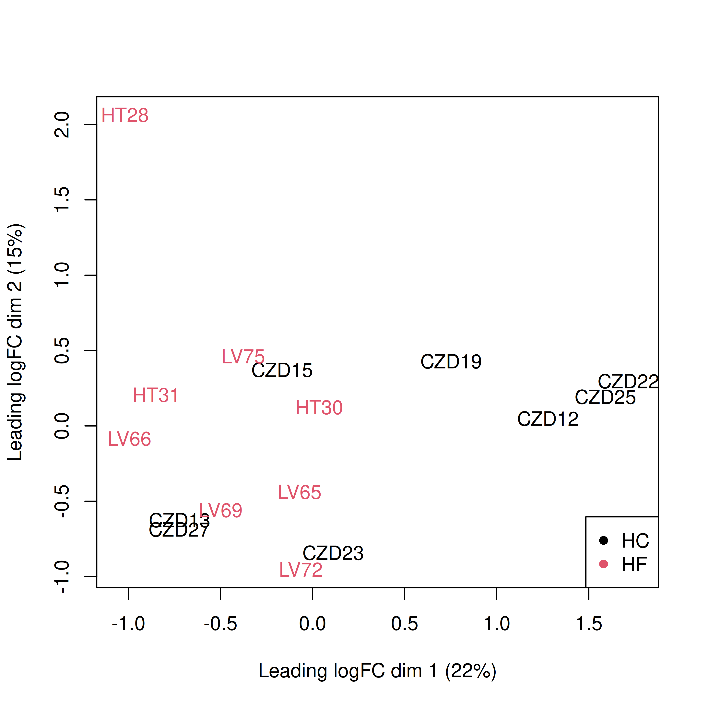
| Version | Author | Date |
|---|---|---|
| fb059b6 | GinoBonazza | 2026-05-27 |
logcpm <- cpm(y, log = TRUE, prior.count = 1)
pr <- prcomp(t(logcpm), scale. = FALSE)
pve <- (pr$sdev^2) / sum(pr$sdev^2) * 100
pca_df <- data.frame(
Sample = rownames(meta),
Group = factor(meta$Group, levels = c("HC", "HF")),
PC1 = pr$x[, 1],
PC2 = pr$x[, 2]
)
ggplot(pca_df, aes(x = PC1, y = PC2, fill = Group, label = Sample)) +
stat_ellipse(
aes(color = Group),
type = "norm",
level = 0.9,
linewidth = 0.7,
show.legend = FALSE
) +
geom_point(shape = 21, size = 3, stroke = 0.4, color = "black") +
ggrepel::geom_text_repel(
size = 3,
max.overlaps = Inf,
box.padding = 0.4,
point.padding = 0.3,
min.segment.length = 0,
segment.size = 0.25
) +
scale_fill_manual(values = group_cols) +
scale_color_manual(values = group_cols) +
scale_x_continuous(expand = expansion(mult = 0.18)) +
scale_y_continuous(expand = expansion(mult = 0.18)) +
labs(
title = "PCA",
x = paste0("PC1 (", round(pve[1], 1), "%)"),
y = paste0("PC2 (", round(pve[2], 1), "%)")
) +
theme_classic(base_size = 12) +
theme(
plot.title = element_text(face = "bold", hjust = 0.5),
axis.title = element_text(face = "bold"),
legend.title = element_text(face = "bold"),
legend.position = "right"
)
levels(group)[1] "HC" "HF"group <- relevel(group, ref = "HC")
y$samples$group <- group
design <- model.matrix(~ 0 + group)
colnames(design) <- levels(group)
design HC HF
1 1 0
2 1 0
3 1 0
4 1 0
5 1 0
6 1 0
7 1 0
8 1 0
9 0 1
10 0 1
11 0 1
12 0 1
13 0 1
14 0 1
15 0 1
16 0 1
attr(,"assign")
[1] 1 1
attr(,"contrasts")
attr(,"contrasts")$group
[1] "contr.treatment"contrast <- makeContrasts(
HF_vs_HC = HF - HC,
levels = design
)
y <- estimateDisp(y, design)
plotBCV(y)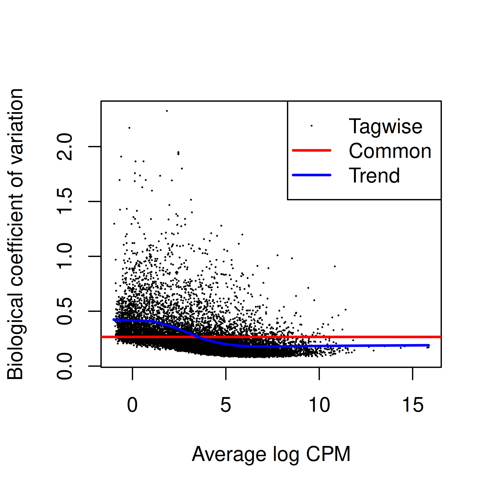
| Version | Author | Date |
|---|---|---|
| fb059b6 | GinoBonazza | 2026-05-27 |
fit <- glmQLFit(y, design)
qlf <- glmQLFTest(fit, contrast = contrast)
res <- topTags(qlf, n = Inf)$table
head(res) logFC logCPM F PValue FDR
EIF4EBP2 -0.5071179 6.700985 38.94010 8.598854e-06 0.1041152
PRIM1 0.5322302 3.113253 30.82077 3.400328e-05 0.1041152
LIMS1 -0.3721924 7.633601 28.55622 5.208594e-05 0.1041152
ADCY1 -2.7527368 0.930841 27.74884 6.291934e-05 0.1041152
ADGRE5 -0.7789979 2.563360 27.51679 6.385967e-05 0.1041152
TJP1 -0.3626337 6.928516 27.35452 6.591673e-05 0.1041152res_export <- res %>%
tibble::rownames_to_column("gene") %>%
dplyr::mutate(
metric = logFC * -log10(PValue),
significance = dplyr::case_when(
FDR < 0.2 & logFC > 0.5 ~ "Increased",
FDR < 0.2 & logFC < -0.5 ~ "Decreased",
TRUE ~ "Not significant"
),
comparison = "HF_vs_HC"
) %>%
dplyr::arrange(FDR, dplyr::desc(abs(logFC)))
res_signif_export <- res_export %>%
dplyr::filter(FDR < 0.2, abs(logFC) > 0.5) %>%
dplyr::arrange(dplyr::desc(metric))
write.csv(
res_export,
file = file.path(output_dir_data, "HMEC_DE_results_HF_vs_HC_all_genes.csv"),
quote = FALSE,
row.names = FALSE
)
write.csv(
res_signif_export,
file = file.path(output_dir_data, "HMEC_DE_results_HF_vs_HC_significant_genes.csv"),
quote = FALSE,
row.names = FALSE
)res_df <- res %>%
dplyr::mutate(
Gene = rownames(res),
significance = dplyr::case_when(
FDR < 0.2 & logFC > 0.5 ~ "Increased",
FDR < 0.2 & logFC < -0.5 ~ "Decreased",
TRUE ~ "Not significant"
),
significance = factor(significance, levels = names(volcano_cols))
)
n_h <- sum(meta$Group == "HC")
n_hf <- sum(meta$Group == "HF")
EnhancedVolcano(
res_df,
lab = res_df$Gene,
x = "logFC",
y = "FDR",
labSize = 0,
legendLabSize = 12,
titleLabSize = 14,
axisLabSize = 12,
captionLabSize = 0,
pointSize = 0.8,
FCcutoff = 0.5,
pCutoff = 0.2,
ylim = c(0, 2),
xlim = c(-3.75, 3.75),
colAlpha = 1,
drawConnectors = FALSE,
ylab = bquote(-Log[10]~FDR),
subtitle = NULL,
title = paste0("HMEC
HF (n=", n_hf, ") vs HC (n=", n_h, ")"),
colCustom = setNames(
volcano_cols[as.character(res_df$significance)],
as.character(res_df$significance)
)
) +
theme(legend.position = "none")
| Version | Author | Date |
|---|---|---|
| fb059b6 | GinoBonazza | 2026-05-27 |
n_top <- 500
logCPM <- cpm(y, log = TRUE, prior.count = 1)
var_genes <- apply(logCPM, 1, var)
top_genes <- names(sort(var_genes, decreasing = TRUE))[1:n_top]
mat <- logCPM
mat_z <- t(scale(t(mat)))
annotation_col <- data.frame(
Group = group,
row.names = colnames(mat_z)
)
pheatmap(
mat_z,
annotation_col = annotation_col,
show_rownames = FALSE,
cluster_cols = TRUE,
clustering_distance_rows = "euclidean",
clustering_distance_cols = "euclidean",
main = paste("All genes")
)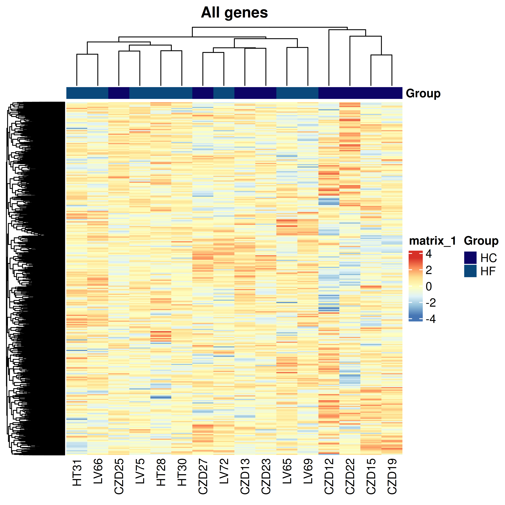
| Version | Author | Date |
|---|---|---|
| fb059b6 | GinoBonazza | 2026-05-27 |
n_top <- 500
logCPM <- cpm(y, log = TRUE, prior.count = 1)
var_genes <- apply(logCPM, 1, var)
top_genes <- names(sort(var_genes, decreasing = TRUE))[1:n_top]
mat <- logCPM[top_genes, ]
mat_z <- t(scale(t(mat)))
annotation_col <- data.frame(
Group = group,
row.names = colnames(mat_z)
)
pheatmap(
mat_z,
annotation_col = annotation_col,
show_rownames = FALSE,
cluster_cols = TRUE,
clustering_distance_rows = "euclidean",
clustering_distance_cols = "euclidean",
main = paste("Top", n_top, "variable genes")
)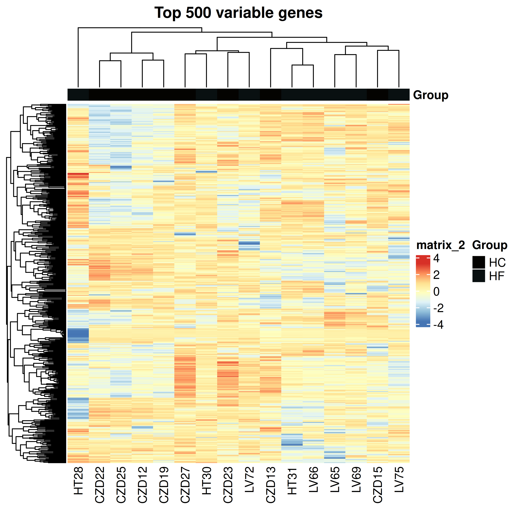
| Version | Author | Date |
|---|---|---|
| fb059b6 | GinoBonazza | 2026-05-27 |
ec_fb_markers <- c("VWF", "PECAM1", "CDH5", "KDR", "ENG", "ESAM", "ST6GALNAC3", "PIK3R3","COL1A1", "VIM", "FN1", "POSTN", "NEBL", "NEGR1", "ACSM3", "DCN", "COL1A2","LUM","COL3A1","TAGLN","ACTA2")
markers_present <- ec_fb_markers[ec_fb_markers %in% rownames(logCPM)]
markers_present [1] "VWF" "PECAM1" "CDH5" "KDR" "ENG"
[6] "ESAM" "ST6GALNAC3" "PIK3R3" "COL1A1" "VIM"
[11] "FN1" "POSTN" "NEBL" "NEGR1" "ACSM3"
[16] "DCN" "COL1A2" "LUM" "COL3A1" "TAGLN"
[21] "ACTA2" logCPM_markers <- logCPM[markers_present, , drop = FALSE]
pheatmap(
logCPM_markers,
annotation_col = annotation_col,
main = "Endothelial markers expression (log2-CPM)"
)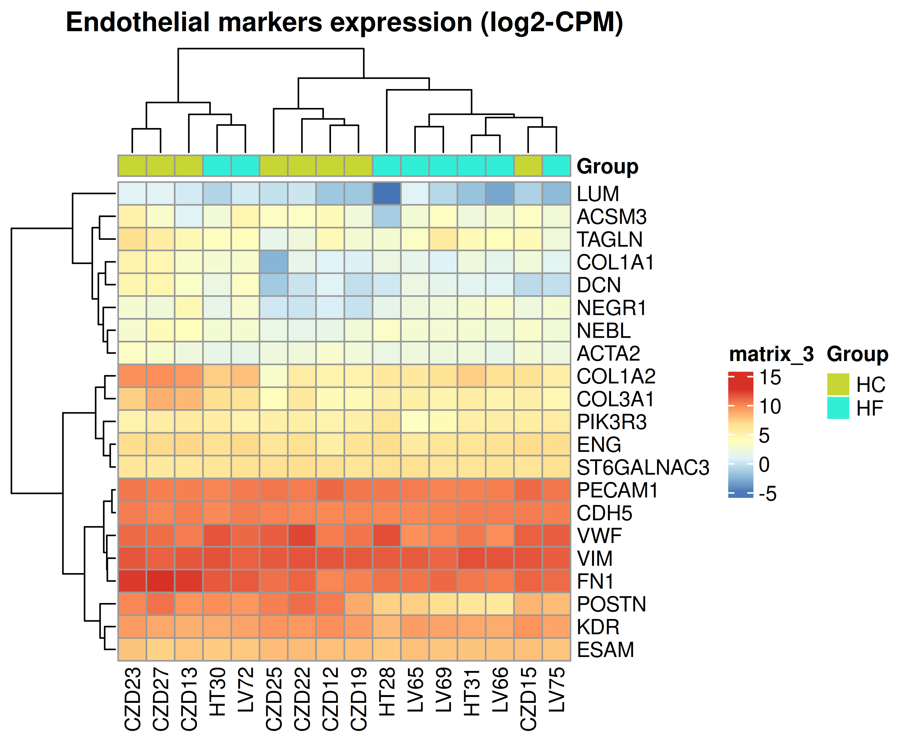
| Version | Author | Date |
|---|---|---|
| fb059b6 | GinoBonazza | 2026-05-27 |
pc1_scores <- pr$x[, 1]
pc1_loadings <- pr$rotation[, 1]
top_n <- 25
top_pc1_genes <- names(sort(abs(pc1_loadings), decreasing = TRUE))[1:top_n]
top_pc1_genes [1] "HOXA5" "CTC-429P9.4" "SELP" "RP11-65I12.1"
[5] "BMPER" "HOXB4" "VIPR1" "SPOCK1"
[9] "HOXA9" "COL25A1" "HOXB6" "HOTAIRM1"
[13] "CXCL6" "RP11-632C17__A.1" "G0S2" "LAMC2"
[17] "ABI3BP" "HOPX" "RP11-706O15.5" "EFNA5"
[21] "CADM3" "TMEM100" "ACP5" "SHISA2"
[25] "HEY2" mat_pc1 <- logCPM[top_pc1_genes, , drop = FALSE]
ord <- order(pc1_scores, decreasing = TRUE)
annotation_col2 <- annotation_col
annotation_col2$PC1 <- pc1_scores
pheatmap(
mat_pc1[, ord, drop = FALSE],
scale = "row",
annotation_col = annotation_col2[ord, , drop = FALSE],
show_colnames = TRUE,
main = "Top PC1 loading genes (row-scaled log2-CPM)"
)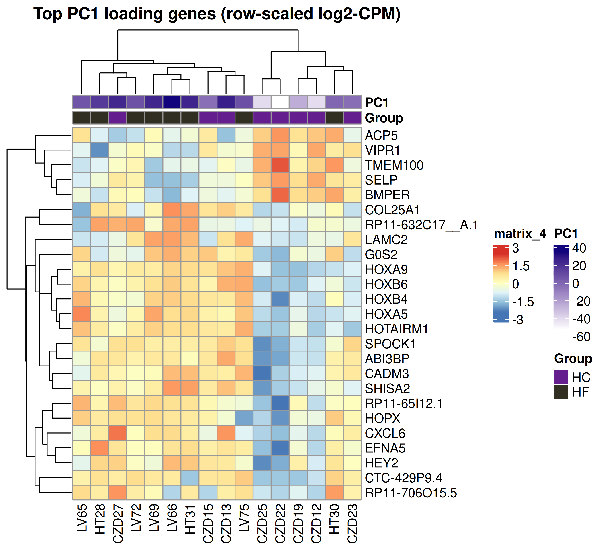
| Version | Author | Date |
|---|---|---|
| fb059b6 | GinoBonazza | 2026-05-27 |
fb_markers <- c("COL1A1","COL1A2","DCN","LUM","COL3A1","TAGLN","ACTA2","POSTN","FN1", "NEGR1")
fb_present <- intersect(fb_markers, rownames(logCPM))
fb_score <- colMeans(logCPM[fb_present, , drop = FALSE], na.rm = TRUE)
ct <- cor.test(pc1_scores, fb_score, method = "spearman")
ct
Spearman's rank correlation rho
data: pc1_scores and fb_score
S = 516, p-value = 0.3669
alternative hypothesis: true rho is not equal to 0
sample estimates:
rho
0.2411765 plot(
pc1_scores, fb_score,
pch = 16,
col = as.numeric(group),
xlab = "PC1 score",
ylab = "Fibroblast marker score (mean log2-CPM)"
)
legend(
"topleft",
legend = levels(group),
col = seq_along(levels(group)),
pch = 16,
bty = "n"
)
text(
pc1_scores, fb_score,
labels = meta$Sample,
pos = 3,
cex = 0.7
)
txt <- paste0(
"Spearman r = ", round(ct$estimate, 2),
"\nP = ", formatC(ct$p.value, format = "e", digits = 2)
)
usr <- par("usr")
text(
x = usr[2] - 0.05 * diff(usr[1:2]),
y = usr[4] - 0.05 * diff(usr[3:4]),
labels = txt,
adj = c(-0.2, 0.6),
cex = 0.9,
bg = "white"
)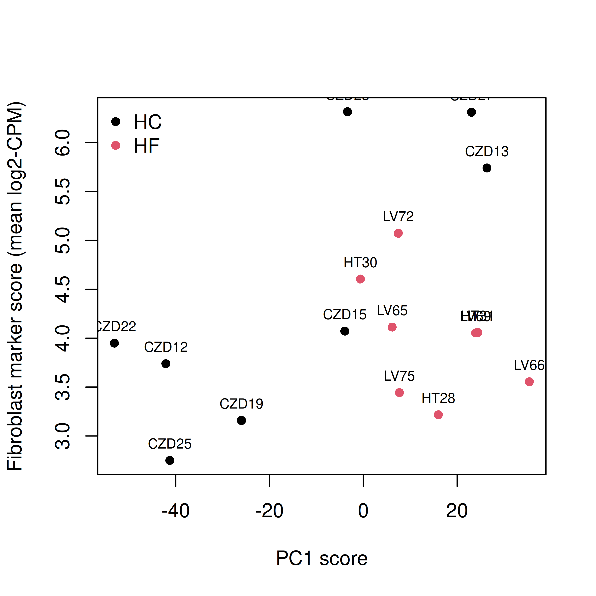
| Version | Author | Date |
|---|---|---|
| fb059b6 | GinoBonazza | 2026-05-27 |
annotation_col2$fb_score <- fb_scoreec_markers <- c("VWF","PECAM1","CDH5","KDR","ENG","ESAM","ST6GALNAC3","PIK3R3")
mix_markers <- unique(c(ec_markers, fb_markers))
mix_present <- intersect(mix_markers, rownames(logCPM))
pheatmap(
logCPM[mix_present, ord, drop = FALSE],
scale = "row",
annotation_col = annotation_col2[ord, , drop = FALSE],
main = "Endothelial and fibroblast markers (row-scaled log2-CPM)"
)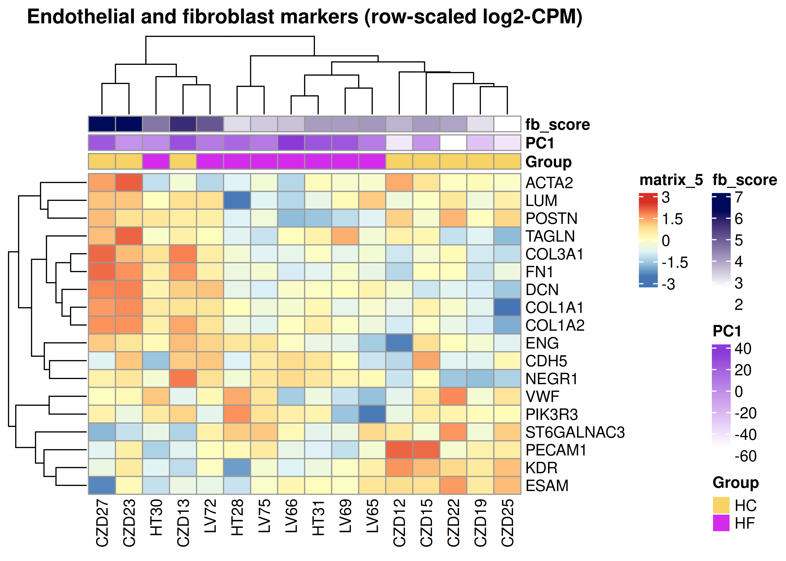
| Version | Author | Date |
|---|---|---|
| fb059b6 | GinoBonazza | 2026-05-27 |
ec_markers <- c("VWF","PECAM1","CDH5","KDR","ENG","ESAM","ST6GALNAC3","PIK3R3")
ec_present <- intersect(ec_markers, rownames(logCPM))
ec_score <- colMeans(logCPM[ec_present, , drop = FALSE], na.rm = TRUE)
ct2 <- cor.test(ec_score, fb_score, method = "spearman")
ct2
Spearman's rank correlation rho
data: ec_score and fb_score
S = 834, p-value = 0.3976
alternative hypothesis: true rho is not equal to 0
sample estimates:
rho
-0.2264706 plot(
ec_score, fb_score,
pch = 16,
col = as.numeric(group),
xlab = "Endothelial marker score (mean log2-CPM)",
ylab = "Fibroblast marker score (mean log2-CPM)"
)
legend(
"bottomleft",
legend = levels(group),
col = seq_along(levels(group)),
pch = 16,
bty = "n"
)
text(
ec_score, fb_score,
labels = meta$Sample,
pos = 3,
cex = 0.7
)
txt2 <- paste0(
"Spearman r = ", round(ct2$estimate, 2),
"\nP = ", formatC(ct2$p.value, format = "e", digits = 2)
)
usr <- par("usr")
text(
x = usr[2] - 0.05 * diff(usr[1:2]),
y = usr[4] - 0.05 * diff(usr[3:4]),
labels = txt2,
adj = c(1, 0.6),
cex = 0.9,
bg = "white"
)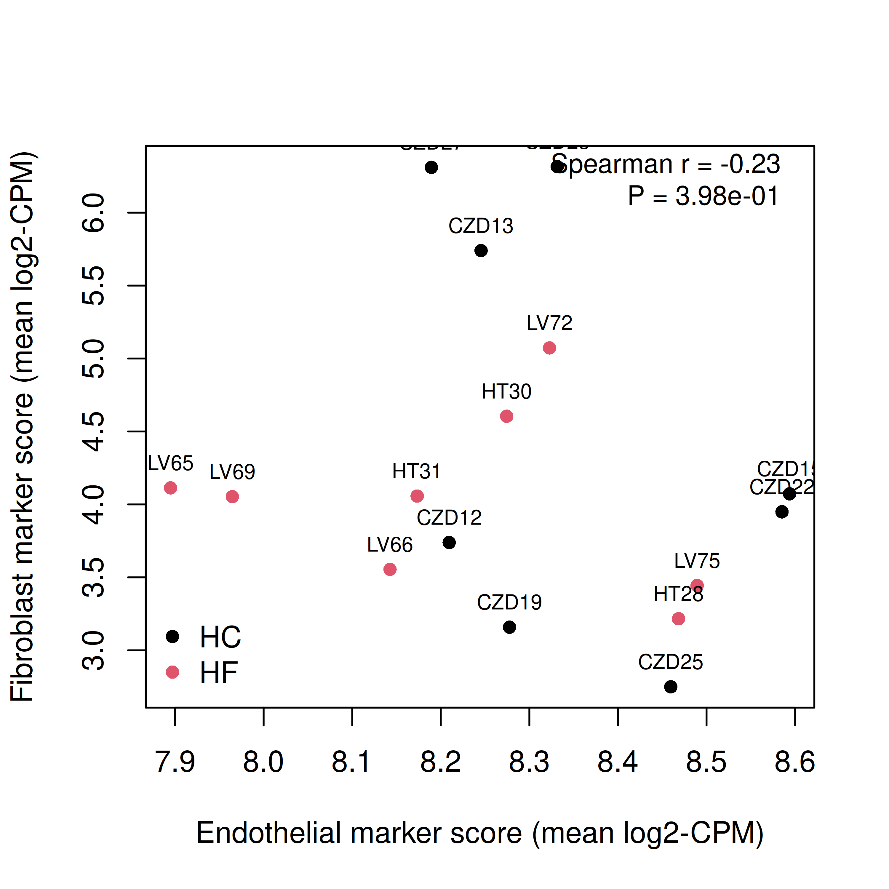
| Version | Author | Date |
|---|---|---|
| fb059b6 | GinoBonazza | 2026-05-27 |
DCM RV
library(qs2)
DCM_RV <- qs_read(here::here("output", "QC_integration_annotation", "DCM_RV.qs2"), nthreads = 32)
DefaultAssay(DCM_RV) <- "RNA"
DCM_RV <- NormalizeData(DCM_RV)
DCM_RV <- DCM_RV[, sample(colnames(DCM_RV), size =20000, replace=F)]DotPlot_scCustom(
seurat_object = DCM_RV,
features = top_pc1_genes,
group.by = "cell_type",
dot.scale = 6
) +
RotatedAxis() +
scale_y_discrete(limits = rev) +
theme_classic(base_size = 11) +
theme(
axis.text.x = element_text(angle = 45, hjust = 1),
axis.title = element_text(face = "bold"),
plot.title = element_text(face = "bold")
) +
labs(
title = "Top PC1 genes across cardiac cell types",
x = NULL,
y = NULL
)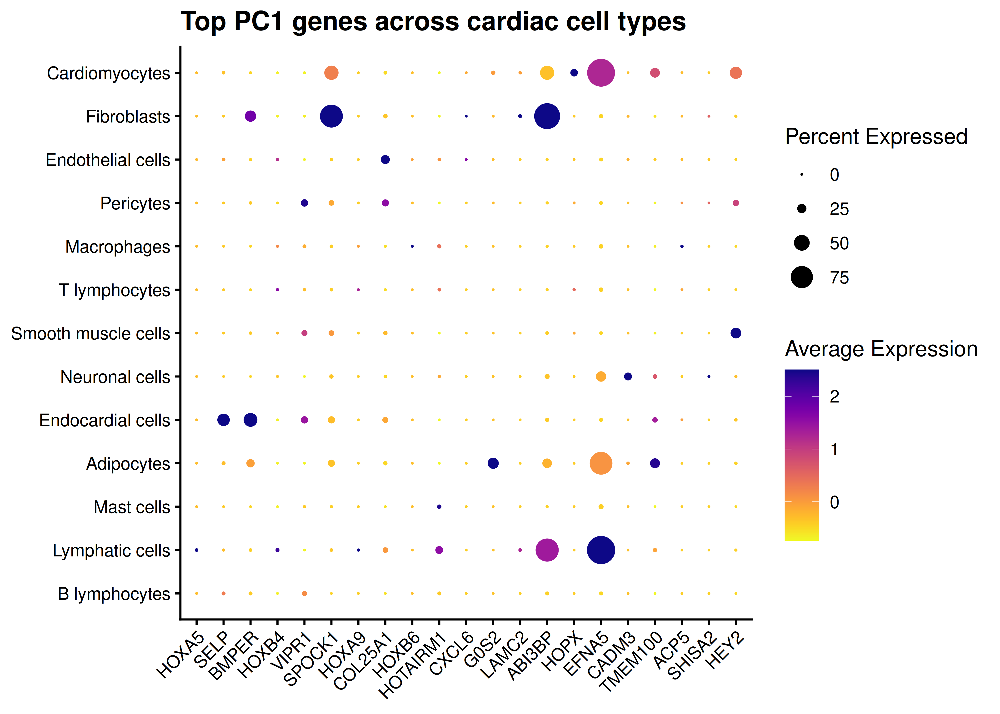
| Version | Author | Date |
|---|---|---|
| fb059b6 | GinoBonazza | 2026-05-27 |
DotPlot_scCustom(
seurat_object = DCM_RV,
features = ec_fb_markers,
group.by = "cell_type",
dot.scale = 6
) +
RotatedAxis() +
scale_y_discrete(limits = rev) +
theme_classic(base_size = 11) +
theme(
axis.text.x = element_text(angle = 45, hjust = 1),
axis.title = element_text(face = "bold"),
plot.title = element_text(face = "bold")
) +
labs(
title = "EC and FB markers across cardiac cell types",
x = NULL,
y = NULL
)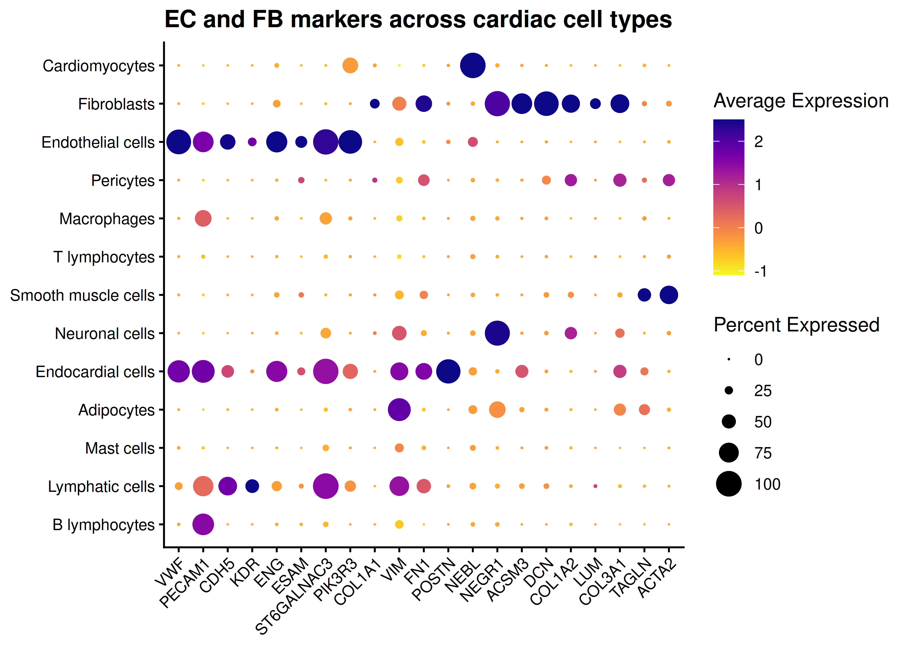
| Version | Author | Date |
|---|---|---|
| fb059b6 | GinoBonazza | 2026-05-27 |
reorder_GO_by_pvalue <- function(enrichGO_result) {
go_results <- enrichGO_result@result
go_results_sorted <- go_results[order(go_results$p.adjust), ]
enrichGO_result@result <- go_results_sorted
return(enrichGO_result)
}res$metric <- res$logFC*-log10(res$PValue)
res$gene <- rownames(res)
entrezid <- bitr(res$gene, fromType="SYMBOL", toType="ENTREZID", OrgDb="org.Hs.eg.db", drop = TRUE)
res <- merge(res, entrezid, by.x = "gene", by.y = "SYMBOL", all.x = TRUE)
res[duplicated(res$metric) | duplicated(res$metric, fromLast = TRUE),] gene logFC logCPM F PValue FDR metric
11722 TEC -0.03778112 -0.8567853 0.01095903 0.9178604 0.9705578 -0.001406341
11723 TEC -0.03778112 -0.8567853 0.01095903 0.9178604 0.9705578 -0.001406341
ENTREZID
11722 7006
11723 100124696res <- res[!duplicated(res$metric), ]
ranked_genes <- res[!is.na(res$ENTREZID), ]
genelist <- ranked_genes$metric
names(genelist) <-ranked_genes$ENTREZID
genelist <- genelist[order(genelist, decreasing = T)]top_up <- res |>
dplyr::arrange(dplyr::desc(metric)) |>
dplyr::slice(1:20)
top_down <- res |>
dplyr::arrange(metric) |>
dplyr::slice(1:20)
genes_up <- top_up$gene
genes_down <- top_down$gene
genes_up [1] "HOXA5" "SNORD3C" "SCN8A" "HOTAIRM1" "TUBA8"
[6] "MRC1" "LAMC2" "HOXB4" "IL1RL1" "AC011330.5"
[11] "RPL13P12" "HOXB3" "TRBC2" "NRN1" "RP11-61L23.2"
[16] "SERPINB9P1" "MYO5B" "GPAT3" "RGS7BP" "HIST2H3PS2" genes_down [1] "ADCY1" "RP11-343H5.4" "RP4-765C7.2" "PDE1A" "VIPR1"
[6] "H2AFY2" "SMOC1" "TNFRSF19" "SELL" "WNT5B"
[11] "COL5A3" "CECR2" "HLA-H" "BMPR1A" "SELP"
[16] "HAND2-AS1" "FAM84A" "GPRC5C" "PODN" "FRRS1" genes_ordered <- c(genes_up, genes_down)
genes_ordered <- genes_ordered[genes_ordered %in% rownames(logCPM)]
mat_metric <- logCPM[genes_ordered, , drop = FALSE]
group_heatmap <- factor(meta[colnames(mat_metric), "Group", drop = TRUE], levels = c("HC", "HF"))
ord <- order(group_heatmap)
mat_metric_ord <- mat_metric[, ord, drop = FALSE]
mat_metric_ord_z <- t(scale(t(mat_metric_ord)))
mat_metric_ord_z[is.na(mat_metric_ord_z)] <- 0
annotation_col_ord <- data.frame(
Group = group_heatmap[ord],
row.names = colnames(mat_metric_ord)
)
ha_hmec <- HeatmapAnnotation(
Group = annotation_col_ord$Group,
col = list(Group = group_cols),
annotation_name_gp = grid::gpar(fontsize = 10, fontface = "bold")
)
Heatmap(
mat_metric_ord_z,
name = "Z-score",
top_annotation = ha_hmec,
col = heat_cols,
cluster_rows = FALSE,
cluster_columns = FALSE,
show_row_names = TRUE,
show_column_names = TRUE,
column_names_gp = grid::gpar(fontsize = 7),
row_names_gp = grid::gpar(fontsize = 8),
column_title = "Top 20 up and top 20 down genes",
column_title_gp = grid::gpar(fontsize = 14, fontface = "bold")
)
| Version | Author | Date |
|---|---|---|
| fb059b6 | GinoBonazza | 2026-05-27 |
GSEA_GO <- gseGO(geneList = genelist,
OrgDb = org.Hs.eg.db,
ont = "ALL",
keyType = "ENTREZID",
nPermSimple = 10000,
minGSSize = 10,
pvalueCutoff = 0.1)
GSEA_GO <- reorder_GO_by_pvalue(GSEA_GO)dotplot(GSEA_GO, showCategory = 10, split=".sign", title = "GO Enrichment Analysis", label_format = 40, font.size = 14) +
theme(plot.title = element_text( face = "bold", size = 18, hjust = 0.5),
axis.text.y = element_text(face = "bold", lineheight = 0.65, size = 12),
axis.text.x = element_text(size = 9),
strip.text = element_text(face = "bold", size = 18)) +
facet_grid(.~.sign)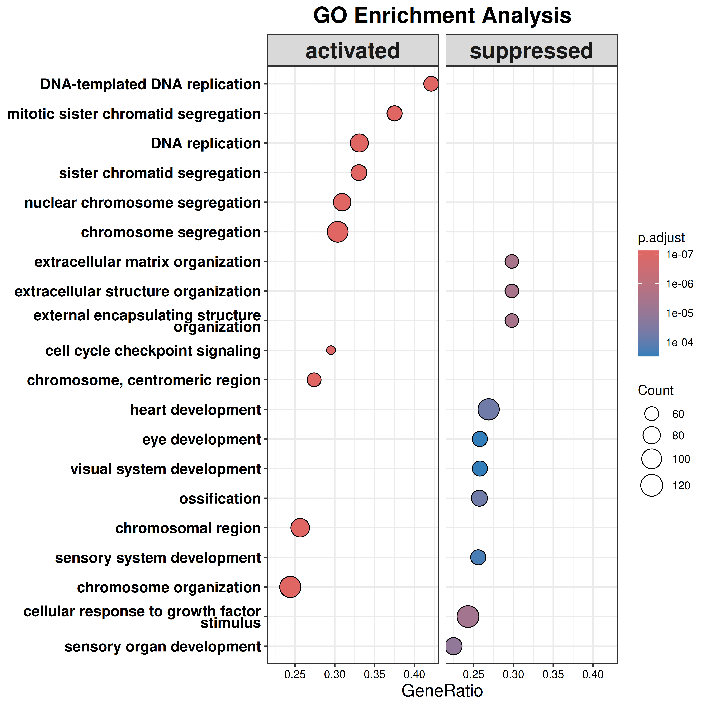
| Version | Author | Date |
|---|---|---|
| fb059b6 | GinoBonazza | 2026-05-27 |
classify_terms <- function(df) {
df$sign <- ifelse(df$NES > 0, "activated", "suppressed")
return(df)
}GSEA_GO@result <- classify_terms(GSEA_GO@result)
activated_terms <- subset(GSEA_GO@result, sign == "activated")
suppressed_terms <- subset(GSEA_GO@result, sign == "suppressed")
GSEA_GO_activated <- GSEA_GO
GSEA_GO_activated@result <- activated_terms
GSEA_GO_activated <- pairwise_termsim(GSEA_GO_activated)
GSEA_GO_suppressed <- GSEA_GO
GSEA_GO_suppressed@result <- suppressed_terms
GSEA_GO_suppressed <- pairwise_termsim(GSEA_GO_suppressed)
p1 <- emapplot(GSEA_GO_activated, showCategory = 50, size_category = 0.7, min_edge = 0.25) +
ggtitle("Activated Terms") +
theme(plot.title = element_text(face = "bold", size = 18, hjust = 0.5))
p2 <- emapplot(GSEA_GO_suppressed, showCategory = 50, size_category = 0.7, min_edge = 0.25) +
ggtitle("Suppressed Terms") +
theme(plot.title = element_text(face = "bold", size = 18, hjust = 0.5))
combined_plot <- p1 | p2
print(combined_plot)
GSEA_GO_simplified <- clusterProfiler::simplify(
GSEA_GO,
cutoff = 0.6,
by = "p.adjust",
select_fun = min,
measure = "Wang",
semData = NULL
)
dotplot(GSEA_GO_simplified, showCategory = 10, split=".sign", title = "GO Enrichment Analysis", label_format = 40, font.size = 14) +
theme(plot.title = element_text( face = "bold", size = 18, hjust = 0.5),
axis.text.y = element_text(face = "bold", lineheight = 0.65, size = 12),
axis.text.x = element_text(size = 9),
strip.text = element_text(face = "bold", size = 18)) +
facet_grid(.~.sign)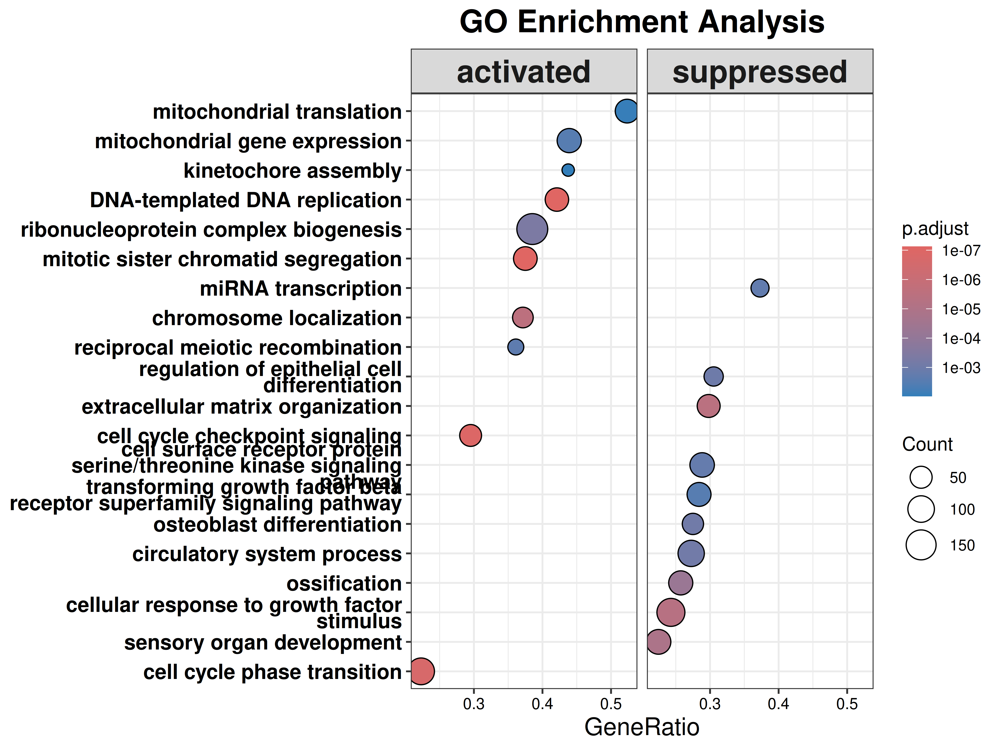
| Version | Author | Date |
|---|---|---|
| fb059b6 | GinoBonazza | 2026-05-27 |
GSEA_GO_simplified@result <- classify_terms(GSEA_GO_simplified@result)
activated_terms <- subset(GSEA_GO_simplified@result, sign == "activated")
suppressed_terms <- subset(GSEA_GO_simplified@result, sign == "suppressed")
GSEA_GO_activated <- GSEA_GO_simplified
GSEA_GO_activated@result <- activated_terms
GSEA_GO_activated <- pairwise_termsim(GSEA_GO_activated)
GSEA_GO_suppressed <- GSEA_GO_simplified
GSEA_GO_suppressed@result <- suppressed_terms
GSEA_GO_suppressed <- pairwise_termsim(GSEA_GO_suppressed)
p1 <- emapplot(GSEA_GO_activated, showCategory = 50, size_category = 0.7, min_edge = 0.2) +
ggtitle("Activated Terms") +
theme(plot.title = element_text(face = "bold", size = 18, hjust = 0.5))
p2 <- emapplot(GSEA_GO_suppressed, showCategory = 50, size_category = 0.7, min_edge = 0.2) +
ggtitle("Suppressed Terms") +
theme(plot.title = element_text(face = "bold", size = 18, hjust = 0.5))
combined_plot <- p1 | p2
print(combined_plot)
| Version | Author | Date |
|---|---|---|
| fb059b6 | GinoBonazza | 2026-05-27 |
p1 <- ridgeplot(GSEA_GO_simplified, showCategory = 30) + labs(x = "enrichment distribution")
print(p1)
| Version | Author | Date |
|---|---|---|
| fb059b6 | GinoBonazza | 2026-05-27 |
make_gsea_barplot <- function(gsea_obj, label_width = 40, top_n = 10, base_size = 11) {
if (is.null(gsea_obj) || nrow(gsea_obj@result) == 0) return(NULL)
gsea_bar_df <- gsea_obj@result %>%
as_tibble() %>%
dplyr::filter(!is.na(NES), !is.na(p.adjust), p.adjust < 0.05)
if (nrow(gsea_bar_df) == 0) return(NULL)
gsea_bar_df <- gsea_bar_df %>%
dplyr::mutate(score = -log10(p.adjust) * sign(NES))
gsea_bar_df_pos <- gsea_bar_df %>%
dplyr::filter(NES > 0) %>%
dplyr::arrange(desc(NES)) %>%
dplyr::slice_head(n = top_n)
gsea_bar_df_neg <- gsea_bar_df %>%
dplyr::filter(NES < 0) %>%
dplyr::arrange(NES) %>%
dplyr::slice_head(n = top_n)
gsea_bar_df_plot <- dplyr::bind_rows(gsea_bar_df_pos, gsea_bar_df_neg)
if (nrow(gsea_bar_df_plot) == 0) return(NULL)
gsea_bar_df_plot$Description <- factor(
gsea_bar_df_plot$Description,
levels = gsea_bar_df_plot$Description[order(gsea_bar_df_plot$NES)]
)
L <- unname(quantile(abs(gsea_bar_df_plot$score), probs = 0.80, na.rm = TRUE))
if (!is.finite(L) || L == 0) L <- max(abs(gsea_bar_df_plot$score), na.rm = TRUE)
ggplot(gsea_bar_df_plot, aes(x = Description, y = NES, fill = score)) +
geom_col(width = 0.9) +
scale_fill_gradient2(
low = "#004C8C",
mid = "white",
high = "#A63A2A",
midpoint = 0,
limits = c(-L, L),
oob = scales::squish,
name = expression(-log[10](adj.~p) %*% sign(NES))
) +
scale_x_discrete(labels = function(x) wrap_2lines(x, width = label_width)) +
coord_flip() +
labs(x = NULL, y = "Normalized enrichment score (NES)") +
theme_bw(base_size = base_size) +
theme(
text = element_text(color = "black"),
axis.text = element_text(color = "black"),
axis.title = element_text(color = "black", size = 13),
plot.title = element_blank(),
axis.text.y = element_text(size = 11),
legend.position = "bottom",
legend.direction = "horizontal",
legend.title = element_text(size = 9),
legend.text = element_text(size = 9)
) +
guides(fill = guide_colorbar(
barwidth = grid::unit(6, "cm"),
barheight = grid::unit(0.3, "cm"),
title.position = "top",
title.hjust = 0.5
))
}reorder_GO_by_NES <- function(enrichGO_result) {
go_results <- enrichGO_result@result
go_results_sorted <- go_results[order(desc(go_results$NES)), ]
enrichGO_result@result <- go_results_sorted
return(enrichGO_result)
}default_labeller <- function(n) {
function(str){
str <- gsub("_", " ", str)
ep_str_wrap(str, n)
}
}barplot.enrichResult <- function (height, x = "Count", color = "p.adjust", showCategory = 8,
font.size = 12, title = "", label_format = 30, ...)
{
object <- height
colorBy <- match.arg(color, c("pvalue", "p.adjust", "qvalue"))
if (x == "geneRatio" || x == "GeneRatio") {
x <- "GeneRatio"
}
else if (x == "count" || x == "Count") {
x <- "Count"
}
df <- fortify(object, showCategory = showCategory, by = x,
...)
if (colorBy %in% colnames(df)) {
p <- ggplot(df, aes_string(x = x, y = "Description",
fill = colorBy)) + theme_dose(font.size) + set_enrichplot_color(type = "fill",
name = color)
}
else {
p <- ggplot(df, aes_string(x = x, y = "Description",
fill = "Description")) + theme_dose(font.size) +
theme(legend.position = "none")
}
label_func <- default_labeller(label_format)
if (is.function(label_format)) {
label_func <- label_format
}
p + geom_col() + scale_y_discrete(labels = label_func) +
ggtitle(title) + ylab(NULL)
}ep_str_wrap <- function(string, width) {
x <- gregexpr(' ', string)
vapply(seq_along(x),
FUN = function(i) {
y <- x[[i]]
n <- nchar(string[i])
len <- (c(y,n) - c(0, y)) ## length + 1
idx <- len > width
j <- which(!idx)
if (length(j) && max(j) == length(len)) {
j <- j[-length(j)]
}
if (length(j)) {
idx[j] <- len[j] + len[j+1] > width
}
idx <- idx[-length(idx)] ## length - 1
start <- c(1, y[idx] + 1)
end <- c(y[idx] - 1, n)
words <- substring(string[i], start, end)
paste0(words, collapse="\n")
},
FUN.VALUE = character(1)
)
}barplot.enrichResult(reorder_GO_by_NES(GSEA_GO_simplified), x="NES", showCategory = 100, label_format = 45) +
ggtitle("Gene Ontology Enrichment Analysis") +
theme(plot.title = element_text(face = "bold", size = 14, hjust = 0.5))
| Version | Author | Date |
|---|---|---|
| fb059b6 | GinoBonazza | 2026-05-27 |
p_go_bar <- make_gsea_barplot(GSEA_GO_simplified, label_width = 48, top_n = 10)
if (!is.null(p_go_bar)) {
p_go_bar
}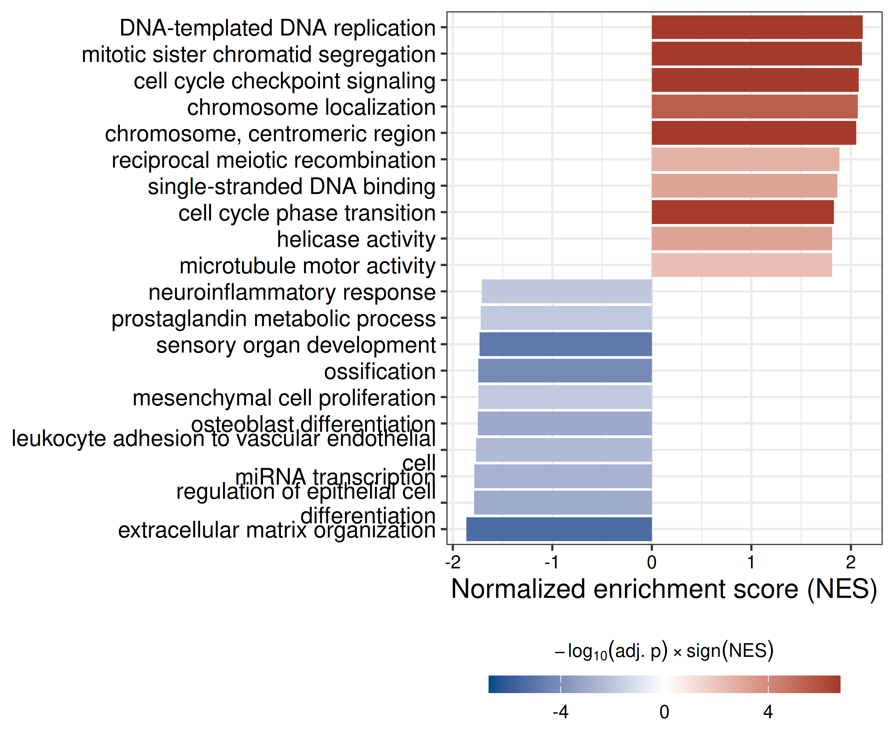
Gene programs and selected genes
group_cols <- c("HC" = "grey85", "HF" = "grey45")
format_p_label <- function(p) {
if (length(p) == 0 || is.na(p)) return("NA")
dplyr::case_when(
p < 0.0001 ~ "****",
p < 0.001 ~ "***",
p < 0.01 ~ "**",
p < 0.05 ~ "*",
TRUE ~ sprintf("%.4f", p)
)
}
format_p_fontface <- function(p) {
if (length(p) == 0 || is.na(p)) return("plain")
dplyr::case_when(
p < 0.05 ~ "bold",
TRUE ~ "plain"
)
}
collapse_duplicate_genes <- function(mat) {
rowsum_mat <- rowsum(mat, group = rownames(mat), reorder = FALSE)
gene_n <- table(rownames(mat))[rownames(rowsum_mat)]
sweep(rowsum_mat, 1, as.numeric(gene_n), "/")
}
angiogenesis_genes <- c("ESM1", "ANGPT2", "KDR", "APLN", "CXCR4", "PGF", "DLL4", "KIT")
redox_no_genes <- c("NOX4", "NOS3", "SOD1")
mito_homeostasis_genes <- c("TFAM", "PPARGC1A")
apoptotic_priming_genes <- c(
"BCL2L11", "BBC3", "PMAIP1", "BAX",
"BID", "BAD", "BMF", "BIK",
"BNIP3", "BNIP3L"
)
s_phase_genes <- Seurat::cc.genes.updated.2019$s.genes
g2m_phase_genes <- Seurat::cc.genes.updated.2019$g2m.genes
s_phase_genes_plot <- c("MCM2", "MCM5", "PCNA", "TYMS", "RRM2", "TK1")
g2m_phase_genes_plot <- c("TOP2A", "UBE2C", "CENPF", "BIRC5", "CDC20", "AURKB")
aerobic_respiration_genes <- AnnotationDbi::select(
org.Hs.eg.db,
keys = "GO:0009060",
keytype = "GOALL",
columns = "SYMBOL"
) %>%
dplyr::pull(SYMBOL) %>%
unique() %>%
na.omit() %>%
as.character()
program_list <- list(
Angiogenesis = angiogenesis_genes,
`Aerobic respiration` = aerobic_respiration_genes,
`S phase` = s_phase_genes,
`G2M phase` = g2m_phase_genes,
`Redox / NO` = redox_no_genes,
`Mitochondrial homeostasis` = mito_homeostasis_genes,
`Apoptotic priming` = apoptotic_priming_genes
)
selected_gene_list <- unique(c(
angiogenesis_genes,
redox_no_genes,
mito_homeostasis_genes,
apoptotic_priming_genes,
s_phase_genes_plot,
g2m_phase_genes_plot
))# Use the unfiltered count matrix for descriptive scores and selected-gene plots.
# The filtered edgeR object y is still used above for DE, but not here.
y_scores <- edgeR::DGEList(counts = counts_mat, samples = meta)
y_scores <- edgeR::calcNormFactors(y_scores)
logcpm_scores <- edgeR::cpm(y_scores, log = TRUE, prior.count = 1)
logcpm_scores_gene <- collapse_duplicate_genes(logcpm_scores)# Keep the expression matrix unchanged, and instead resolve gene lists to the
# symbols/aliases actually present in logcpm_scores_gene.
manual_gene_alias_map <- c(
"ATP5F1A" = "ATP5A1",
"ATP5F1B" = "ATP5B",
"ATP5F1C" = "ATP5C1",
"ATP5F1D" = "ATP5D",
"ATP5F1E" = "ATP5E",
"ATP5PB" = "ATP5F1",
"ATP5ME" = "ATP5I",
"ATP5PF" = "ATP5J2",
"ATP5PO" = "ATP5O",
"ATP5MF" = "ATP5J2",
"ATP5PD" = "ATP5H",
"ATP5MG" = "ATP5L",
"ATP5IF1" = "ATPIF1",
"MACROH2A1" = "H2AFY",
"NOP53" = "GLTSCR2",
"ANTKMT" = "C10orf2",
"KGD4" = "MRPS36",
"ATPSCKMT" = "CKMT2",
"ETFRF1" = "LYRM5",
"PRXL2C" = "AAED1",
"CSKMT" = "METTL12",
"MLDHR" = "C16orf70",
"PIMREG" = "FAM64A",
"JPT1" = "HN1"
)
get_symbol_alias_candidates <- function(gene) {
out <- character(0)
by_symbol <- suppressMessages(
AnnotationDbi::select(
org.Hs.eg.db,
keys = gene,
keytype = "SYMBOL",
columns = c("SYMBOL", "ALIAS")
)
)
if (nrow(by_symbol) > 0) {
out <- c(out, by_symbol$SYMBOL, by_symbol$ALIAS)
}
by_alias <- suppressMessages(
AnnotationDbi::select(
org.Hs.eg.db,
keys = gene,
keytype = "ALIAS",
columns = c("SYMBOL", "ALIAS")
)
)
if (nrow(by_alias) > 0) {
out <- c(out, by_alias$SYMBOL, by_alias$ALIAS)
}
unique(stats::na.omit(as.character(out)))
}
resolve_gene_symbol <- function(gene, matrix_genes) {
if (gene %in% matrix_genes) {
return(tibble::tibble(
original_gene = gene,
resolved_gene = gene,
mapping_status = "direct",
map_source = "matrix rowname"
))
}
manual_hit <- unname(manual_gene_alias_map[gene])
if (!is.na(manual_hit) && manual_hit %in% matrix_genes) {
return(tibble::tibble(
original_gene = gene,
resolved_gene = manual_hit,
mapping_status = "mapped",
map_source = "manual alias map"
))
}
candidates <- get_symbol_alias_candidates(gene)
candidate_hits <- candidates[candidates %in% matrix_genes]
if (length(candidate_hits) > 0) {
return(tibble::tibble(
original_gene = gene,
resolved_gene = candidate_hits[1],
mapping_status = "mapped",
map_source = "org.Hs.eg.db SYMBOL/ALIAS"
))
}
tibble::tibble(
original_gene = gene,
resolved_gene = NA_character_,
mapping_status = "missing",
map_source = NA_character_
)
}
resolve_gene_vector <- function(genes, matrix_genes) {
purrr::map_dfr(unique(genes), resolve_gene_symbol, matrix_genes = matrix_genes)
}
program_gene_map <- purrr::imap_dfr(program_list, function(genes, program) {
resolve_gene_vector(genes, rownames(logcpm_scores_gene)) %>%
dplyr::mutate(program = program, .before = 1)
})
program_gene_map <- program_gene_map %>%
dplyr::mutate(
total_raw_counts = dplyr::if_else(
!is.na(resolved_gene),
as.numeric(Matrix::rowSums(counts_mat[resolved_gene, , drop = FALSE])),
NA_real_
)
)
write.csv(
program_gene_map,
file = file.path(output_dir_data, "HMEC_gene_program_gene_presence_detailed_alias_mapped.csv"),
quote = FALSE,
row.names = FALSE
)
program_gene_map %>%
dplyr::filter(mapping_status != "direct")# A tibble: 26 × 6
program original_gene resolved_gene mapping_status map_source
<chr> <chr> <chr> <chr> <chr>
1 Aerobic respiration ATP5F1A ATP5A1 mapped manual alias …
2 Aerobic respiration ATP5F1B ATP5B mapped manual alias …
3 Aerobic respiration ATP5F1C ATP5C1 mapped manual alias …
4 Aerobic respiration ATP5F1D ATP5D mapped manual alias …
5 Aerobic respiration ATP5F1E ATP5E mapped manual alias …
6 Aerobic respiration ATP5PB ATP5F1 mapped manual alias …
7 Aerobic respiration ATP5ME ATP5I mapped manual alias …
8 Aerobic respiration ATP5PF ATP5J2 mapped manual alias …
9 Aerobic respiration ATP5PO ATP5O mapped manual alias …
10 Aerobic respiration COXFA4 NDUFA4 mapped org.Hs.eg.db …
# ℹ 16 more rows
# ℹ 1 more variable: total_raw_counts <dbl>make_program_score <- function(mat, genes) {
gene_map <- resolve_gene_vector(genes, rownames(mat))
genes_present <- gene_map %>%
dplyr::filter(!is.na(resolved_gene)) %>%
dplyr::pull(resolved_gene) %>%
unique()
if (length(genes_present) == 0) {
out <- rep(NA_real_, ncol(mat))
names(out) <- colnames(mat)
return(out)
}
mat_sub <- mat[genes_present, , drop = FALSE]
mat_z <- t(scale(t(mat_sub)))
mat_z[!is.finite(mat_z)] <- 0
colMeans(mat_z, na.rm = TRUE)
}
score_df <- meta %>%
dplyr::mutate(Sample = rownames(meta)) %>%
dplyr::select(Sample, Group) %>%
dplyr::mutate(Group = factor(Group, levels = c("HC", "HF")))
for (nm in names(program_list)) {
score_df[[paste0(gsub("[^A-Za-z0-9]+", "_", tolower(nm)), "_score")]] <-
make_program_score(logcpm_scores_gene, program_list[[nm]])[score_df$Sample]
}
program_summary <- program_gene_map %>%
dplyr::group_by(program) %>%
dplyr::summarise(
n_genes_total = dplyr::n(),
n_genes_resolved = sum(!is.na(resolved_gene)),
n_unique_features_used = dplyr::n_distinct(resolved_gene[!is.na(resolved_gene)]),
genes_mapped = paste(
unique(paste0(original_gene[mapping_status == "mapped"], "->", resolved_gene[mapping_status == "mapped"])),
collapse = ";"
),
genes_missing_after_mapping = paste(original_gene[is.na(resolved_gene)], collapse = ";"),
.groups = "drop"
)
write.csv(score_df, file = file.path(output_dir_data, "HMEC_gene_program_scores.csv"), quote = FALSE, row.names = FALSE)
write.csv(program_summary, file = file.path(output_dir_data, "HMEC_gene_program_gene_presence.csv"), quote = FALSE, row.names = FALSE)
program_summary# A tibble: 7 × 6
program n_genes_total n_genes_resolved n_unique_features_used genes_mapped
<chr> <int> <int> <int> <chr>
1 Aerobic re… 297 297 296 ATP5F1A->AT…
2 Angiogenes… 8 8 8 ->
3 Apoptotic … 10 10 10 ->
4 G2M phase 54 54 54 PIMREG->FAM…
5 Mitochondr… 2 2 2 ->
6 Redox / NO 3 3 3 ->
7 S phase 43 43 43 ->
# ℹ 1 more variable: genes_missing_after_mapping <chr>score_cols <- grep("_score$", colnames(score_df), value = TRUE)
score_title_map <- c(
angiogenesis_score = "Angiogenesis score",
aerobic_respiration_score = "Aerobic respiration score",
s_phase_score = "S-phase score",
g2m_phase_score = "G2M-phase score",
redox_no_score = "Redox / NO score",
mitochondrial_homeostasis_score = "Mitochondrial homeostasis score",
apoptotic_priming_score = "Apoptotic priming score"
)
score_stats <- purrr::map_dfr(score_cols, function(score_col) {
df_sub <- score_df %>%
dplyr::select(Sample, Group, score = dplyr::all_of(score_col)) %>%
dplyr::filter(!is.na(score))
if (nrow(df_sub) == 0 || dplyr::n_distinct(df_sub$Group) < 2) {
return(NULL)
}
fit <- lm(score ~ Group, data = df_sub)
broom::tidy(fit) %>%
dplyr::mutate(
feature = score_col,
feature_label = dplyr::coalesce(unname(score_title_map[score_col]), score_col),
comparison = "HF_vs_HC"
)
})
score_stats <- score_stats %>%
dplyr::group_by(term) %>%
dplyr::mutate(FDR = p.adjust(p.value, method = "BH")) %>%
dplyr::ungroup()
score_stats_group <- score_stats %>%
dplyr::filter(term == "GroupHF") %>%
dplyr::arrange(p.value)
write.csv(
score_stats,
file = file.path(output_dir_data, "HMEC_gene_program_score_stats_HF_vs_HC_all_terms.csv"),
quote = FALSE,
row.names = FALSE
)
write.csv(
score_stats_group,
file = file.path(output_dir_data, "HMEC_gene_program_score_stats_HF_vs_HC_group_effect.csv"),
quote = FALSE,
row.names = FALSE
)plot_program_score <- function(df, score_col, title) {
df <- df %>%
dplyr::select(Sample, Group, score = dplyr::all_of(score_col)) %>%
dplyr::filter(!is.na(score))
fit <- lm(score ~ Group, data = df)
p_group <- broom::tidy(fit) %>%
dplyr::filter(term == "GroupHF") %>%
dplyr::pull(p.value)
y_max <- max(df$score, na.rm = TRUE)
y_min <- min(df$score, na.rm = TRUE)
y_range <- y_max - y_min
if (!is.finite(y_range) || y_range == 0) y_range <- 1
ggplot(df, aes(x = Group, y = score, fill = Group)) +
geom_boxplot(width = 0.55, outlier.shape = NA, color = "black", linewidth = 0.5) +
geom_jitter(width = 0.10, size = 1.5, shape = 21, stroke = 0.4, color = "black") +
geom_segment(
aes(x = 1, xend = 2, y = y_max + 0.10 * y_range, yend = y_max + 0.10 * y_range),
inherit.aes = FALSE
) +
annotate(
"text",
x = 1.5,
y = y_max + 0.16 * y_range,
label = format_p_label(p_group),
size = 5,
fontface = format_p_fontface(p_group)
) +
scale_fill_manual(values = group_cols) +
coord_cartesian(ylim = c(y_min - 0.05 * y_range, y_max + 0.22 * y_range)) +
labs(title = title, x = NULL, y = "Score") +
theme_classic(base_size = 12) +
theme(
plot.title = element_text(face = "bold", hjust = 0.5),
axis.text.x = element_text(angle = 45, hjust = 1, face = "bold"),
axis.title.y = element_text(face = "bold"),
legend.position = "none"
)
}
plot_gene_logcpm <- function(original_gene, resolved_gene = NULL) {
if (is.null(resolved_gene)) {
gene_map <- resolve_gene_symbol(original_gene, rownames(logcpm_scores_gene))
resolved_gene <- gene_map$resolved_gene[1]
}
if (is.na(resolved_gene) || !(resolved_gene %in% rownames(logcpm_scores_gene))) {
stop("Gene not found after alias mapping: ", original_gene)
}
gene_mat <- logcpm_scores_gene[resolved_gene, , drop = FALSE]
gene_values <- as.numeric(gene_mat[1, ])
df <- tibble::tibble(
Sample = colnames(logcpm_scores_gene),
gene = original_gene,
resolved_gene = resolved_gene,
logCPM = gene_values,
Group = factor(meta[colnames(logcpm_scores_gene), "Group", drop = TRUE], levels = c("HC", "HF"))
)
fit <- lm(logCPM ~ Group, data = df)
p_group <- broom::tidy(fit) %>%
dplyr::filter(term == "GroupHF") %>%
dplyr::pull(p.value)
y_max <- max(df$logCPM, na.rm = TRUE)
y_min <- min(df$logCPM, na.rm = TRUE)
y_range <- y_max - y_min
if (!is.finite(y_range) || y_range == 0) y_range <- 1
plot_title <- if (original_gene == resolved_gene) {
original_gene
} else {
paste0(original_gene, " (", resolved_gene, ")")
}
ggplot(df, aes(x = Group, y = logCPM, fill = Group)) +
geom_boxplot(width = 0.55, outlier.shape = NA, color = "black", linewidth = 0.5) +
geom_jitter(width = 0.10, size = 1.5, shape = 21, stroke = 0.4, color = "black") +
geom_segment(
aes(x = 1, xend = 2, y = y_max + 0.10 * y_range, yend = y_max + 0.10 * y_range),
inherit.aes = FALSE
) +
annotate(
"text",
x = 1.5,
y = y_max + 0.17 * y_range,
label = format_p_label(p_group),
size = 5,
fontface = format_p_fontface(p_group)
) +
scale_fill_manual(values = group_cols) +
coord_cartesian(ylim = c(y_min - 0.05 * y_range, y_max + 0.22 * y_range)) +
labs(title = plot_title, x = NULL, y = "logCPM") +
theme_classic(base_size = 13) +
theme(
plot.title = element_text(face = "bold", hjust = 0.5, size = 13),
axis.text.x = element_text(angle = 45, hjust = 1, face = "bold"),
axis.title.y = element_text(face = "bold"),
legend.position = "none"
)
}Gene program score plots
score_cols <- grep("_score$", colnames(score_df), value = TRUE)
score_title_map <- c(
angiogenesis_score = "Angiogenesis score",
aerobic_respiration_score = "Aerobic respiration score",
s_phase_score = "S-phase score",
g2m_phase_score = "G2M-phase score",
redox_no_score = "Redox / NO score",
mitochondrial_homeostasis_score = "Mitochondrial homeostasis score",
apoptotic_priming_score = "Apoptotic priming score"
)
for (score_col in score_cols) {
title <- unname(score_title_map[score_col])
if (is.na(title)) {
title <- score_col %>%
gsub("_score$", "", .) %>%
gsub("_", " ", .) %>%
tools::toTitleCase() %>%
paste("score")
}
print(plot_program_score(score_df, score_col, title))
}


Selected gene expression plots
selected_gene_map <- resolve_gene_vector(selected_gene_list, rownames(logcpm_scores_gene))
selected_genes_present <- selected_gene_map %>%
dplyr::filter(!is.na(resolved_gene)) %>%
dplyr::distinct(original_gene, resolved_gene, mapping_status, map_source)
selected_genes_missing <- selected_gene_map %>%
dplyr::filter(is.na(resolved_gene)) %>%
dplyr::pull(original_gene)
write.csv(
selected_gene_map,
file = file.path(output_dir_data, "HMEC_selected_genes_presence_alias_mapped.csv"),
quote = FALSE,
row.names = FALSE
)
write.csv(
data.frame(gene_missing = selected_genes_missing),
file = file.path(output_dir_data, "HMEC_selected_genes_missing.csv"),
quote = FALSE,
row.names = FALSE
)
gene_program_lookup <- purrr::imap_dfr(program_list, function(genes, program) {
tibble::tibble(original_gene = genes, program = program)
}) %>%
dplyr::group_by(original_gene) %>%
dplyr::summarise(program = paste(unique(program), collapse = "; "), .groups = "drop")
selected_gene_logcpm_df <- purrr::map_dfr(seq_len(nrow(selected_genes_present)), function(i) {
original_gene <- selected_genes_present$original_gene[i]
resolved_gene <- selected_genes_present$resolved_gene[i]
gene_values <- as.numeric(logcpm_scores_gene[resolved_gene, ])
tibble::tibble(
Sample = colnames(logcpm_scores_gene),
Group = factor(meta[colnames(logcpm_scores_gene), "Group", drop = TRUE], levels = c("HC", "HF")),
gene = original_gene,
resolved_gene = resolved_gene,
logCPM = gene_values
)
}) %>%
dplyr::left_join(gene_program_lookup, by = c("gene" = "original_gene"))
selected_gene_stats <- selected_gene_logcpm_df %>%
dplyr::group_by(gene, resolved_gene, program) %>%
dplyr::group_modify(~ {
if (nrow(.x) == 0 || dplyr::n_distinct(.x$Group) < 2) {
return(tibble::tibble())
}
broom::tidy(lm(logCPM ~ Group, data = .x))
}) %>%
dplyr::ungroup() %>%
dplyr::mutate(comparison = "HF_vs_HC") %>%
dplyr::group_by(term) %>%
dplyr::mutate(FDR = p.adjust(p.value, method = "BH")) %>%
dplyr::ungroup()
selected_gene_stats_group <- selected_gene_stats %>%
dplyr::filter(term == "GroupHF") %>%
dplyr::arrange(p.value)
write.csv(
selected_gene_logcpm_df,
file = file.path(output_dir_data, "HMEC_selected_gene_logCPM_by_sample.csv"),
quote = FALSE,
row.names = FALSE
)
write.csv(
selected_gene_stats,
file = file.path(output_dir_data, "HMEC_selected_gene_stats_HF_vs_HC_all_terms.csv"),
quote = FALSE,
row.names = FALSE
)
write.csv(
selected_gene_stats_group,
file = file.path(output_dir_data, "HMEC_selected_gene_stats_HF_vs_HC_group_effect.csv"),
quote = FALSE,
row.names = FALSE
)
for (i in seq_len(nrow(selected_genes_present))) {
print(plot_gene_logcpm(
original_gene = selected_genes_present$original_gene[i],
resolved_gene = selected_genes_present$resolved_gene[i]
))
}


| Version | Author | Date |
|---|---|---|
| d657dca | GinoBonazza | 2026-05-28 |
Heatmap of selected genes and program scores
genes_for_heatmap_ordered <- tibble::tibble(
category = c(
rep("Angiogenesis", length(angiogenesis_genes)),
rep("S phase", length(s_phase_genes_plot)),
rep("G2M phase", length(g2m_phase_genes_plot)),
rep("Redox / NO", length(redox_no_genes)),
rep("Mitochondrial homeostasis", length(mito_homeostasis_genes))
),
original_gene = c(
angiogenesis_genes,
s_phase_genes_plot,
g2m_phase_genes_plot,
redox_no_genes,
mito_homeostasis_genes
)
) %>%
dplyr::left_join(
selected_genes_present %>%
dplyr::distinct(original_gene, resolved_gene),
by = "original_gene"
) %>%
dplyr::filter(!is.na(resolved_gene)) %>%
dplyr::distinct(original_gene, resolved_gene, .keep_all = TRUE)
mat_gene <- logcpm_scores_gene[
genes_for_heatmap_ordered$resolved_gene,
,
drop = FALSE
]
group_heatmap <- factor(
meta[colnames(mat_gene), "Group", drop = TRUE],
levels = c("HC", "HF")
)
ord <- order(group_heatmap)
mat_gene_ord <- mat_gene[, ord, drop = FALSE]
mat_gene_ord_z <- t(scale(t(mat_gene_ord)))
mat_gene_ord_z[!is.finite(mat_gene_ord_z)] <- 0
rownames(mat_gene_ord_z) <- ifelse(
genes_for_heatmap_ordered$original_gene == genes_for_heatmap_ordered$resolved_gene,
genes_for_heatmap_ordered$original_gene,
paste0(
genes_for_heatmap_ordered$original_gene,
" (",
genes_for_heatmap_ordered$resolved_gene,
")"
)
)
annotation_col_ord <- data.frame(
Group = group_heatmap[ord],
row.names = colnames(mat_gene_ord)
)
ha_hmec_selected <- HeatmapAnnotation(
Group = annotation_col_ord$Group,
col = list(Group = group_cols),
annotation_name_gp = grid::gpar(fontsize = 10, fontface = "bold")
)
Heatmap(
mat_gene_ord_z,
name = "Z-score",
top_annotation = ha_hmec_selected,
col = heat_cols,
cluster_rows = FALSE,
cluster_columns = FALSE,
show_row_names = TRUE,
show_column_names = TRUE,
column_names_gp = grid::gpar(fontsize = 7),
row_names_gp = grid::gpar(fontsize = 8),
column_title = "Selected genes",
column_title_gp = grid::gpar(fontsize = 14, fontface = "bold")
)
score_mat <- score_df %>%
dplyr::select(Sample, dplyr::ends_with("_score")) %>%
tibble::column_to_rownames("Sample") %>%
as.matrix()
score_mat_t <- t(score_mat)
score_mat_z <- t(scale(t(score_mat_t)))
score_mat_z[!is.finite(score_mat_z)] <- 0
ann_col_scores <- data.frame(
Group = factor(score_df$Group, levels = c("HC", "HF")),
row.names = score_df$Sample
)
pheatmap::pheatmap(
score_mat_z,
annotation_col = ann_col_scores,
show_rownames = TRUE,
show_colnames = TRUE,
cluster_cols = TRUE,
cluster_rows = TRUE,
main = "Gene program scores"
)
Remove two samples
keep_samples <- c("CZD12", "CZD13", "CZD15", "CZD19", "CZD22", "CZD25", "HT28", "HT30", "HT31", "LV65", "LV66", "LV69", "LV72", "LV75")
idx <- meta$Sample %in% keep_samples
meta_sub <- meta[idx, , drop = FALSE]
counts_sub <- counts_mat[, idx, drop = FALSE]
group <- factor(meta_sub$Group)
y2 <- DGEList(counts = counts_sub, samples = meta_sub)
y2$samples$group <- group
keep_genes <- filterByExpr(y2, group = group, min.count = 20)
y2 <- y2[keep_genes, , keep.lib.sizes = FALSE]
y2 <- calcNormFactors(y2)
group <- relevel(group, ref = "HC")
y2$samples$group <- group
design <- model.matrix(~ 0 + group)
colnames(design) <- levels(group)
contrast <- makeContrasts(HF_vs_HC = HF - HC, levels = design)
y2 <- estimateDisp(y2, design)
fit <- glmQLFit(y2, design)
qlf <- glmQLFTest(fit, contrast = contrast)
res2 <- topTags(qlf, n = Inf)$tableres2_df <- res2 %>%
dplyr::mutate(
Gene = rownames(res2),
significance = dplyr::case_when(
FDR < 0.2 & logFC > 0.5 ~ "Increased",
FDR < 0.2 & logFC < -0.5 ~ "Decreased",
TRUE ~ "Not significant"
),
significance = factor(significance, levels = names(volcano_cols))
)
n_h2 <- sum(meta_sub$Group == "HC")
n_hf2 <- sum(meta_sub$Group == "HF")
EnhancedVolcano(
res2_df,
lab = res2_df$Gene,
x = "logFC",
y = "FDR",
labSize = 0,
legendLabSize = 12,
titleLabSize = 14,
axisLabSize = 12,
captionLabSize = 0,
pointSize = 0.8,
FCcutoff = 0.5,
pCutoff = 0.2,
ylim = c(0, 2),
xlim = c(-3.75, 3.75),
colAlpha = 1,
drawConnectors = FALSE,
ylab = bquote(-Log[10]~FDR),
subtitle = NULL,
title = paste0("HMEC
HF (n=", n_hf2, ") vs HC (n=", n_h2, ")
(no CZD23 and CZD27)"),
colCustom = setNames(
volcano_cols[as.character(res2_df$significance)],
as.character(res2_df$significance)
)
) +
theme(legend.position = "none")
| Version | Author | Date |
|---|---|---|
| fb059b6 | GinoBonazza | 2026-05-27 |
sessionInfo()R version 4.5.2 (2025-10-31)
Platform: x86_64-pc-linux-gnu
Running under: Ubuntu 24.04.3 LTS
Matrix products: default
BLAS: /usr/lib/x86_64-linux-gnu/openblas-pthread/libblas.so.3
LAPACK: /usr/lib/x86_64-linux-gnu/openblas-pthread/libopenblasp-r0.3.26.so; LAPACK version 3.12.0
locale:
[1] LC_CTYPE=en_US.UTF-8 LC_NUMERIC=C
[3] LC_TIME=en_US.UTF-8 LC_COLLATE=en_US.UTF-8
[5] LC_MONETARY=en_US.UTF-8 LC_MESSAGES=en_US.UTF-8
[7] LC_PAPER=en_US.UTF-8 LC_NAME=C
[9] LC_ADDRESS=C LC_TELEPHONE=C
[11] LC_MEASUREMENT=en_US.UTF-8 LC_IDENTIFICATION=C
time zone: Etc/UTC
tzcode source: system (glibc)
attached base packages:
[1] grid stats4 stats graphics grDevices datasets utils
[8] methods base
other attached packages:
[1] qs2_0.1.7 broom_1.0.11
[3] circlize_0.4.16 ComplexHeatmap_2.26.0
[5] EnhancedVolcano_1.29.1 ggrepel_0.9.6
[7] DOSE_4.4.0 enrichplot_1.30.4
[9] dorothea_1.22.0 OmnipathR_3.18.2
[11] decoupleR_2.16.0 reactable_0.4.5
[13] edgeR_4.8.0 limma_3.66.0
[15] ReactomePA_1.54.0 AnnotationHub_4.0.0
[17] BiocFileCache_3.0.0 dbplyr_2.5.1
[19] org.Hs.eg.db_3.22.0 AnnotationDbi_1.72.0
[21] clusterProfiler_4.18.2 gprofiler2_0.2.4
[23] harmony_1.2.4 Rcpp_1.1.0
[25] clustree_0.5.1 ggraph_2.2.2
[27] statmod_1.5.1 patchwork_1.3.2
[29] scater_1.38.0 scuttle_1.20.0
[31] Matrix.utils_0.9.7 RColorBrewer_1.1-3
[33] scales_1.4.0 knitr_1.50
[35] gridExtra_2.3 png_0.1-8
[37] pheatmap_1.0.13 reshape2_1.4.5
[39] lubridate_1.9.4 forcats_1.0.1
[41] stringr_1.6.0 purrr_1.2.0
[43] tidyr_1.3.1 tibble_3.3.0
[45] tidyverse_2.0.0 magrittr_2.0.4
[47] ggplot2_4.0.1 dplyr_1.2.1
[49] scCustomize_3.2.2 scDblFinder_1.24.0
[51] Matrix_1.6-5 DropletUtils_1.30.0
[53] SingleCellExperiment_1.32.0 SummarizedExperiment_1.40.0
[55] Biobase_2.70.0 GenomicRanges_1.62.0
[57] Seqinfo_1.0.0 IRanges_2.44.0
[59] S4Vectors_0.48.0 BiocGenerics_0.56.0
[61] generics_0.1.4 MatrixGenerics_1.22.0
[63] matrixStats_1.5.0 SeuratObject_5.0.2
[65] Seurat_4.4.0 readxl_1.4.5
[67] readr_2.1.6 here_1.0.2
loaded via a namespace (and not attached):
[1] igraph_2.2.1 graph_1.88.0
[3] ica_1.0-3 plotly_4.11.0
[5] rematch2_2.1.2 tidyselect_1.2.1
[7] rvest_1.0.5 bit_4.6.0
[9] doParallel_1.0.17 clue_0.3-66
[11] lattice_0.22-7 rjson_0.2.23
[13] blob_1.2.4 S4Arrays_1.10.1
[15] parallel_4.5.2 cli_3.6.5
[17] ggplotify_0.1.3 goftest_1.2-3
[19] BiocIO_1.20.0 bluster_1.20.0
[21] grr_0.9.5 BiocNeighbors_2.4.0
[23] uwot_0.2.4 curl_7.0.0
[25] mime_0.13 evaluate_1.0.5
[27] tidytree_0.4.6 leiden_0.4.3.1
[29] stringi_1.8.7 backports_1.5.0
[31] XML_3.99-0.20 httpuv_1.6.16
[33] paletteer_1.6.0 rappdirs_0.3.3
[35] splines_4.5.2 logger_0.4.1
[37] bcellViper_1.46.0 sctransform_0.4.2
[39] ggbeeswarm_0.7.3 sessioninfo_1.2.3
[41] DBI_1.2.3 HDF5Array_1.38.0
[43] jquerylib_0.1.4 reactome.db_1.94.0
[45] withr_3.0.2 git2r_0.36.2
[47] systemfonts_1.3.1 rprojroot_2.1.1
[49] xgboost_3.1.2.1 lmtest_0.9-40
[51] ggnewscale_0.5.2 tidygraph_1.3.1
[53] rtracklayer_1.70.0 BiocManager_1.30.27
[55] htmlwidgets_1.6.4 fs_1.6.6
[57] labeling_0.4.3 SparseArray_1.10.4
[59] cellranger_1.1.0 h5mread_1.2.1
[61] reticulate_1.44.1 zoo_1.8-14
[63] XVector_0.50.0 UCSC.utils_1.6.0
[65] timechange_0.3.0 foreach_1.5.2
[67] data.table_1.17.8 ggtree_4.0.1
[69] rhdf5_2.54.0 R.oo_1.27.1
[71] ggiraph_0.9.2 irlba_2.3.5.1
[73] ggrastr_1.0.2 gridGraphics_0.5-1
[75] lazyeval_0.2.2 yaml_2.3.11
[77] survival_3.8-3 scattermore_1.2
[79] BiocVersion_3.22.0 crayon_1.5.3
[81] RcppAnnoy_0.0.22 progressr_0.18.0
[83] tweenr_2.0.3 later_1.4.4
[85] ggridges_0.5.7 codetools_0.2-20
[87] GlobalOptions_0.1.3 KEGGREST_1.50.0
[89] Rtsne_0.17 shape_1.4.6.1
[91] gdtools_0.4.4 Rsamtools_2.26.0
[93] filelock_1.0.3 pkgconfig_2.0.3
[95] xml2_1.5.1 spatstat.univar_3.1-5
[97] GenomicAlignments_1.46.0 aplot_0.2.9
[99] spatstat.sparse_3.1-0 ape_5.8-1
[101] viridisLite_0.4.2 xtable_1.8-4
[103] plyr_1.8.9 httr_1.4.7
[105] tools_4.5.2 globals_0.18.0
[107] beeswarm_0.4.0 checkmate_2.3.3
[109] nlme_3.1-168 digest_0.6.39
[111] farver_2.1.2 tzdb_0.5.0
[113] yulab.utils_0.2.2 viridis_0.6.5
[115] glue_1.8.0 cachem_1.1.0
[117] polyclip_1.10-7 Biostrings_2.78.0
[119] parallelly_1.45.1 ScaledMatrix_1.18.0
[121] fontBitstreamVera_0.1.1 pbapply_1.7-4
[123] httr2_1.2.1 tcltk_4.5.2
[125] vroom_1.6.7 spam_2.11-1
[127] gson_0.1.0 dqrng_0.4.1
[129] utf8_1.2.6 graphlayouts_1.2.2
[131] shiny_1.12.0 tidydr_0.0.6
[133] R.utils_2.13.0 rhdf5filters_1.22.0
[135] RCurl_1.98-1.17 memoise_2.0.1
[137] rmarkdown_2.30 R.methodsS3_1.8.2
[139] future_1.68.0 RANN_2.6.2
[141] fontLiberation_0.1.0 renv_1.1.5
[143] Cairo_1.7-0 stringfish_0.18.0
[145] spatstat.data_3.1-9 rstudioapi_0.17.1
[147] cluster_2.1.8.1 whisker_0.4.1
[149] janitor_2.2.1 spatstat.utils_3.2-0
[151] hms_1.1.4 fitdistrplus_1.2-4
[153] cowplot_1.2.0 colorspace_2.1-2
[155] rlang_1.2.0 GenomeInfoDb_1.46.1
[157] DelayedMatrixStats_1.32.0 sparseMatrixStats_1.22.0
[159] dotCall64_1.2 ggforce_0.5.0
[161] ggtangle_0.0.9 xfun_0.56
[163] iterators_1.0.14 abind_1.4-8
[165] GOSemSim_2.36.0 treeio_1.34.0
[167] Rhdf5lib_1.32.0 bitops_1.0-9
[169] promises_1.5.0 scatterpie_0.2.6
[171] RSQLite_2.4.5 qvalue_2.42.0
[173] fgsea_1.36.0 DelayedArray_0.36.0
[175] GO.db_3.22.0 compiler_4.5.2
[177] prettyunits_1.2.0 beachmat_2.26.0
[179] graphite_1.56.0 listenv_0.10.0
[181] fontquiver_0.2.1 workflowr_1.7.2
[183] BiocSingular_1.26.1 tensor_1.5.1
[185] MASS_7.3-65 progress_1.2.3
[187] BiocParallel_1.44.0 spatstat.random_3.4-3
[189] R6_2.6.1 fastmap_1.2.0
[191] fastmatch_1.1-6 vipor_0.4.7
[193] ROCR_1.0-11 rsvd_1.0.5
[195] gtable_0.3.6 KernSmooth_2.23-26
[197] miniUI_0.1.2 deldir_2.0-4
[199] htmltools_0.5.9 RcppParallel_5.1.11-1
[201] bit64_4.6.0-1 spatstat.explore_3.6-0
[203] lifecycle_1.0.5 ggprism_1.0.7
[205] S7_0.2.1 zip_2.3.3
[207] restfulr_0.0.16 sass_0.4.10
[209] vctrs_0.7.3 spatstat.geom_3.6-1
[211] snakecase_0.11.1 scran_1.38.0
[213] ggfun_0.2.0 sp_2.2-0
[215] future.apply_1.20.0 bslib_0.9.0
[217] pillar_1.11.1 metapod_1.18.0
[219] locfit_1.5-9.12 otel_0.2.0
[221] jsonlite_2.0.0 cigarillo_1.0.0
[223] GetoptLong_1.1.0